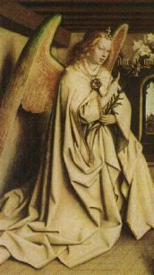
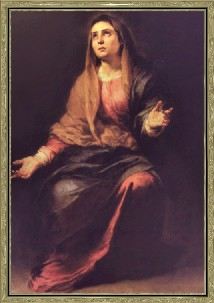
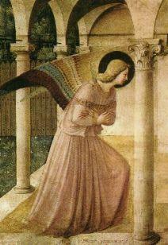
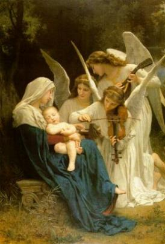
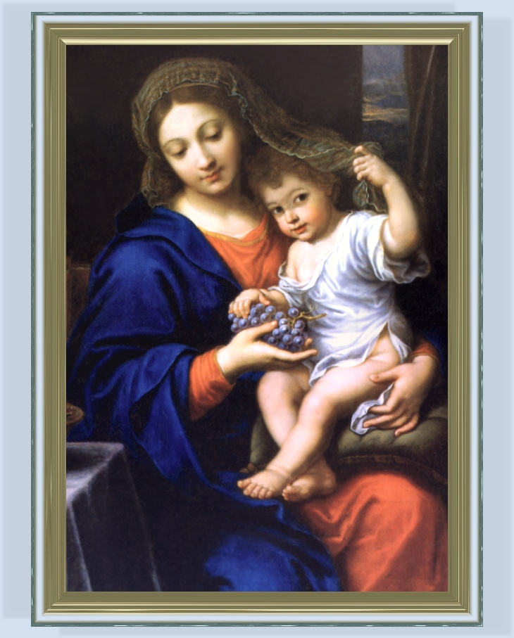
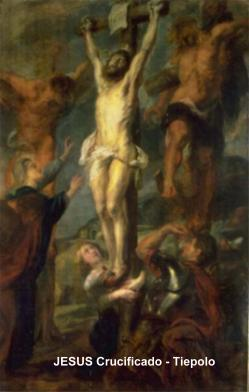
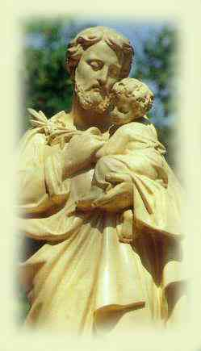
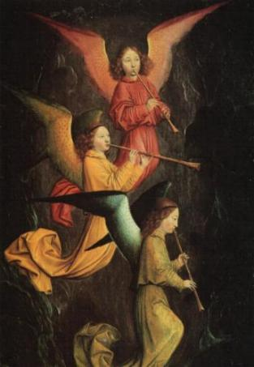
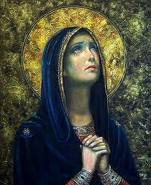

SantÃssimo
DEUS, para louvor e maior devoção ao SENHOR e edificação das almas.
SantÃssimo
DEUS, para louvor e maior devoção ao SENHOR e edificação das almas.VISÕES BEATÃFICAS - 1
I – Visio (Primeira Visão).
1 - Agora
descreverei as Visões e Revelações, com minha alma diante do SantÃssimo
DEUS, para louvor e maior devoção ao SENHOR e edificação das almas.
2 - Uma vez, com a alma dirigida a DEUS, enlevada pelas orações e santas meditações, surgiram vinte e seis espÃritos malignos que me injuriaram e lançaram horrÃveis e inomináveis insultos, e se preparavam para arremessar fogo sobre a cidade, e diziam: “Isto é a ira de DEUS que envia fogo sobre a cidade de Roma por causa dos abomináveis pecados do povo. 3 - Dois de nós, a começar por qualquer região, serão os executores do castigo Divino, sufocando e destruindo a cidadeâ€. 4 - Para grande angústia e inquietação da alma da serva de CRISTO, os demônios se consideravam incumbidos de punir o povo e destruir a cidade. 5 - Continuando suas orações com fé e confiança, alcançou a graça Divina. 6 - O Salvador surgiu no espaço brilhando com intenso esplendor, que os falsos emissários Divino logo reconheceram.
7 - Consolada a serva de CRISTO pela graça Divina, teve a Visão não dos falsos julgadores, mas a imagem da verdadeira MÃE DE DEUS coroada, tendo o MENINO JESUS aos braços, o bem aventurado João Batista e os gloriosos apóstolos Pedro e Paulo, de joelhos suplicando ao SENHOR em benefÃcio das almas e liberação da cidade de Roma. 8 - Então a humilde e devota serva de CRISTO ouviu uma suavÃssima voz, dizendo: “O excelso e misericordioso SENHOR, se inclinou aceitar as súplicas dos Santos e bem-aventurados, retrocedendo a sentença contra a cidade, mas se eles não se corrigissem graves penas inesperadas aconteceriamâ€. 9 - Como sinal do possÃvel castigo, imediatamente três diabos lançaram flechas de fogo: a primeira sobre a torre da BasÃlica de São Paulo, a segunda sobre a torre da BasÃlica de São Pedro e a terceira sobre a Capela do SENHOR em São João de Latrão.
10 - Isto ocorreu no mês de Julho do ano do SENHOR de 1430. (MCCCCXXX)
DEUS seja louvado.

II – VISÃO NÚMERO 2
1 - Em outra ocasião, numa Sexta-Feira Santa, estava na Igreja de Santa Cruz, em Jerusalém, a mencionada alma devota ouvia a palavra Divina, embora sentisse alguma fraqueza em face de sua continua penitência de jejum e abstinência, em honra a cruel Paixão de NOSSO SENHOR JESUS CRISTO. A seguir, as orações e pregação continuaram defronte a Igreja, numa praça, e ela estava em companhia de sua filha espiritual Rita Covelli. 2 – Estando muito triste e compungida ouvindo o relato da Paixão do SENHOR, foi nesse momento, arrebatada em êxtase durante a pregação da palavra de DEUS. 3 – Retornando do êxtase, o seu pai espiritual que também estava presente, lhe perguntou a respeito da visão. 4 – Ela com verdadeira humildade, quase com temor, mas com plena obediência relatou ter visto o SALVADOR em forma humana coberto de chagas e feridas provenientes da terrÃvel flagelação, e das perfurações causadas pelos espinhos da ignóbil coroa, de onde escorria o preciosÃssimo Sangue Divino. 5 - Viu o Céu aberto, e de lá descia uma espécie de corrente incandescente e brilhante, que como foi revelado, representava a caridade e o amor do SALVADOR por toda a natureza humana. 6 – Uma imensidão de fogo e luz esplendorosa procedia da corrente, como se ela fosse um conduto, derramando sobre a humanidade inteira, querendo estimular e suprir as necessidades de todos que acolhessem as graças Divinas. 7 - Mas quando aquela humilde serva de CRISTO descrevia a visão para o seu pai espiritual, estava tão emocionada que à s vezes não conseguia encontrar as palavras certas para se exprimir corretamente o que tinha visto. 8 - Esta visão aconteceu no ano 1431, no dia 29 de Março, pois a Páscoa, naquele ano, caiu no dia 1º de Abril. DEUS seja louvado.
III – TERCEIRA VISÃO
1 - Certo dia, depois que aquela serva humilde e devota de DEUS recebeu o SantÃssimo Corpo de CRISTO Sacramentado na Capela do Santo Anjo, na Igreja de Santa Maria em Trastevere, permaneceu em êxtase aproximadamente durante uma hora e meia. 2 – Retornando ao normal dos seus sentidos, ela relatou ao seu pai espiritual por obediência, mesmo com certo descontrole emocional, narrou humildemente, dizendo que depois de ter recebido o Corpo Sacramentado do SENHOR permaneceu em êxtase, completamente fora da realidade terrestre. Então, foi conduzida em espÃrito a um grande e bonito campo, cheio de uma relva viçosa e atraente, e no meio do campo havia uma maravilhosa fonte redonda de alabastro, que orientava as suas águas. 3 – A fonte de alabastro era alimentada por uma água que descia suavemente do Céu com abundância. E a água da fonte era conduzida por todas as partes, proporcionando plena irrigação, multiplicando as suas gotas por todo o campo, produzindo uma relva linda e flores belÃssimas. 4 – Sete pessoas se aproximaram para beber daquela água, a fim de aliviar a sede. 5 – A serva de CRISTO ansiosamente observava como beber daquela água, e então aconteceu que também um daqueles gotejar de água veio para ela, e a saciou e consolou, deixando-a admirada com o fato.
6 – Próximo a fonte, numa barra de alabastro viu escrito: “O piedoso JESUS diligentemente arrasta a alma amorosa até a fonte, em êxtase, quando ela tendo desejo mas mantendo-se relutante e resistente, ELE então a faz não continuar se opondoâ€.
7 – Tendo lido o mencionado escrito, ainda em êxtase, o seu pai espiritual e sua filha espiritual Rita, que são os seus confidentes, ouviram a própria bem-aventurada dizer em êxtase: 8 - “Suplico-TE dulcÃssimo SENHOR meu, que tem um Amor tão imenso, permita de TUA própria Vontade dar Amor à s almas desejosas e não restringir o Teu carinho, porque as almas permanecem muito atormentadasâ€.
9 – O fato aconteceu no mês de Abril do ano 1431. DEUS seja louvado.
IV – Alia Visio (Outra Visão – NÚMERO 4)

5 - Nas proximidades de seu falecimento, Francisca aquela alma bem-aventurada e devota de DEUS preveniu a sua cunhada, de que viu o espÃrito maligno querendo molestá-la, com a tentativa diabólica de descobrir nela algum pecado, de modo a conduzi-la ao desespero. 6 - Mas feita à extrema unção sobre a enferma, o espÃrito maligno de mau agouro ficou enfraquecido e desapareceu. E a graciosa Vannozza rendeu o seu espÃrito ao SENHOR. 7 - Disse em seguida esta alma devota de DEUS, que viu uma nuvem clara e brilhante descendo sobre o corpo de Vannozza, e que do corpo de Vannozza apareceu outra luz, que atraiu a nuvem brilhante, e que a luz penetrou na nuvem. A bem-aventurada lançou água benta no corpo de Vannozza para afugentar qualquer espÃrito maligno. O corpo de Vannozza foi levado para Igreja de Araceli com grande acompanhamento de pessoas.
8 – Isto aconteceu no ano 1431, no mês de Abril. DEUS seja louvado.
V – QUINTA VISÃO
1 - Em certa ocasião, depois de receber a Sagrada Comunhão na mencionada Capela, aquela alma serva de DEUS ficou em êxtase durante uma hora e o seu espÃrito foi arrebatado ao Céu, o corpo permaneceu imóvel, e para que ninguém nesse lugar tivesse o impulso de mover os seus olhos pouco fechados, 2 – tentando reanimar o seu corpo, que estava em êxtase, ela disse estas palavras: 3 - “Oh! Amor fervoroso, eu não quero ser atraiçoada, nem permitas me afastar de TI. Vai me proporcionar a dor da TUA ausência? Eu não poderia ficar nem mais de pé! Amor justÃssimo não me deixe mais viver nestas trevas, nelas eu não aguento mais, nem mesmo permanecer assim eu não posso. Pelo menos me diz: por qual motivo está me afastando de TIâ€? 4 – Seguramente ouviram as suas palavras, o seu pai espiritual e uma de suas filhas em CRISTO, chamada Rita. 5 – E depois, a bem-aventurada retornando ao seu sentido normal, relatou ao seu pai espiritual, por obediência, o acontecido na visão.
6 – E descrevendo disse que foi conduzida em espÃrito a uma coluna imensa e brilhantÃssima sobre um monte altÃssimo cujo cume alcançava até o Céu, de tal maneira lhe apareceu assim. 7 – Também do imenso cume saÃa um fogo ardentÃssimo, o qual precisamente representava o Amor Divino. Com sabedoria e precisão, o fogo que se elevava da coluna era dividido em varias partes, uma das quais entrava no Céu, outras entrava na referida montanha se espalhando com grande esplendor, e outra parte era derramada sobre uma multidão reunida.
8 - A mais humilde serva de CRISTO disse que estando na base daquela coluna viu a multidão dividida em quatro partes, e viu também que, aquele fogo se aproximou de uma daquelas partes do povo, mas não foi aceito, e na verdade, aquela primeira parte do povo que não estava aceitando era muito grande e permaneceu obscura e desprezÃvel. 9 – O dito fogo descendo sobre a segunda parte, não foi apreciado por todos e inclusive viraram o rosto para baixo, para não vê-lo. 10 – A seguir o fogo desceu sobre a terceira parte do povo, mas eles eram seres humanos frios e insensÃveis, lentos e preguiçosos, e para receber aquele fogo Divino deveriam ser quentes, interessados e fervorosos. 11 – Por fim o fogo Divino desceu sobre a quarta parte da multidão, e alcançou um grupo de pessoas com a justa medida do entendimento, e logo foi aceito e honrado. Entretanto este grupo em comparação com toda a multidão era muito pequeno e reduzido. 12 – Seu pai espiritual interrogando-a sobre o número de pessoas deste grupo que constituÃa a quarta parte a receber aquele fogo, ela respondeu que no máximo, representava apenas um por cento do total.
13 – Aquela humilde e devota serva de CRISTO, que estava próxima a base daquela coluna, ouviu uma voz vinda da própria coluna, que dizia: 14 – “EU sou o Amor, que dou Amor a quem me ama, e EU Mesmo dou consistência ao Amor e o faço firme e perseverante. Mesmo aquele que recebe não estando totalmente consciente, o Amor torna a alma capaz, o Amor inflama a alma, o Amor atrai a alma para MIMâ€.
15 – Esta visão foi no mês de Abril do ano 1431. DEUS seja louvado.
VI – SEXTA VISÃO
1 - Em determinada noite essa bendita serva de CRISTO estava num pequeno e modesto leito, em santa meditação e oração, como sempre fazia, e vieram à queles malignos inimigos da raça humana a fim de molestá-la no seu santo propósito, como eles sempre fazem. 2 – Em seguida, ela observou uma pomba branca sobre o lençol da cama. 3 – Temendo e mesmo desconfiando ser uma ilusão diabólica, o Arcanjo que lhe acompanhava mostrou a sua presença, como de costume, movendo a cabeça e os seus cabelos dourados e desalinhados para afugentar, se fosse o maligno. 4 – Então apareceu uma grande e brilhante luz, que incidiu sobre a pomba. 5 – E a seguir a serva de CRISTO também recebeu aquele esplendor, e o seu espÃrito foi arrebatado pela própria luz, seguido da pomba, enquanto o seu corpo permaneceu imóvel em êxtase. 6 – Subindo ao Céu, ela viu a gloriosÃssima Rainha do Céu coroada com três coroas e circundada totalmente por uma brilhantÃssima luz, e acima Dela, num grau maior, estava o SENHOR JESUS em Sua Divina Majestade. 7 – Havia um espelho luminoso, no qual estavam escritas as letras: “Um Único DEUS, Uma Única Fé, Um Só Batismoâ€. (Ef 4, 5) 8 – E naquele espelho, a MÃE mais gloriosa de DEUS e da humanidade, olhava carinhosamente aquelas almas que Lhe pareciam as mais sinceras e devotas, e nada mais havia exceto louvores e agradecimentos, que davam a própria Rainha do Céu e ao seu amável FILHO, por causa dos benefÃcios e das graças que ELE concedia a humanidade. 9 – Daquela Divina Majestade saÃam raios como se fossem do sol, muito intensos, raios muito mais brilhantes, que circundavam e iluminavam muito mais a beleza indescritÃvel da MÃE DE DEUS. 10 – Assim que aquela alma devota de DEUS percebeu e viu que os raios procediam da Divina Majestade e da dulcÃssima MÃE DE DEUS, refletindo em todos os ardorosos circundantes, ouviu a suavÃssima e terna melodia da própria RAINHA, dizendo: 11 – “AltÃssimo e OnipotentÃssimo DEUS, que criou todas as coisas, Minha mente está colocada completamente em TI, e por essa razão neste espelho Eu Me olho totalmente em TI. O SENHOR Me deu a vida, e Me manteve firme em todos os desÃgnios, iluminando Minha mente com o TEU Amor, que sempre Me dedicou que Me guarda e Me defendeâ€. 12 – Depois de ter dito isto, a Rainha do Céu voltou-se para esta alma devota de DEUS, e disse: 13 – “Ó pobre alma, você tem uma condição modesta que não pode resistir à magnitude do fogo do Amor Divino. Você é débil por natureza e assim deve permanecer. O Amor lhe fez pura, e continuará sendo, enquanto ELE permanecer em tiâ€. 14 – Estas considerações atestam uma verdade que está relacionada à primeira parte do texto que está escrito no espelho (item 7 acima). Seguramente existe: UM ÚNICO DEUS.
15 – No sexto dia após a referida visão, a humilde e devota serva de CRISTO estando em sua cela, em êxtase, viu a Rainha do Céu e a Divina Majestade. A própria Rainha olhou com atenção naquele espelho e disse: 16 – “Oh! Queridos DEUS PAI e DEUS FILHO, que fizeram de Mim como uma Imperatriz, ó Sabedoria Eterna que Me fizeram tão forte com raÃzes tão profundas, e que Me fazendo olhar no espelho, o texto comprova toda a fé de Meu Ser. 17 – Fizeste-Me acreditar na verdade Católica, que é pura e justa, e a qual adotei integralmente. 18 – Sempre olho para TI, Meu DEUS, e estou feliz com TEUS infinitos e preciosos bensâ€. 19 – E depois disto, Ela disse a aquela alma devota de DEUS: “O alma que sempre se mantém nos conselhos Divinos, continue colhendo os frutos da sabedoria de DEUS; seja sempre aplicada, para que possa mantê-los e cuidar para que não haja algo que vá lhe fazer afastar de tuas boas intenções. 20 – Seja vigorosa e infatigável, e mantenha a sua fé, para que do outro lado (pessoas do mundo) não venha a transbordar, e que este transbordamento (talvez elogios, louvores, distinções,...) não lhe conduza a violentar a tua cabeçaâ€. 21 – Estas considerações atestam a verdade da segunda parte do texto no espelho, ou seja, UMA SÓ FÉ.
22 – E depois de dois dias,
a referida serva de DEUS em êxtase, na sua casa, 
30 – Dois dias depois da visão narrada acima, no primeiro domingo seguinte, não por presunção, mas com a verdadeira humildade que possuÃa, em face da ordem do pai espiritual, ela veio a Capela receber o SantÃssimo Sacramento, e foi arrebatada em êxtase, ficando o corpo da referida bem-aventurada imóvel, por um espaço de tempo. 31 – Em êxtase ela viu a gloriosÃssima MÃE DE DEUS louvando e dando graças a DEUS PAI deste modo: 32 – “Louvores e graças imortais tenho para o SENHOR Divina Majestade, que Me predestinou antes da constituição do mundo, na profundÃssima Sabedoria do interior do TEU CORAÇÃO como uma MÃE, e Eu era o TEU Unigênito, co-igual ao mais amado e TEU diletÃssimo FILHO JESUS. 33 – De modo inteiramente semelhante, ELE, SENHOR DEUS e Meu dulcÃssimo FILHO, rendo louvores inesgotáveis, por que DEUS infinita Sabedoria da Palavra do próprio DEUS e do DEUS Verdadeiro, ELE se dignou alojar no útero de Minha humana virgindade. 34 – O excelso e poderosÃssimo DEUS, com TEU dulcÃssimo Amor e Sabedoria, quis um ser mais humilde para ser o TEU Tabernaculo, e quis na Sua eterna visão, agradável a TUA piedade, assumir ali, a TUA própria Carne. 35 – Ó AMOR, o mais doce de todos, que Me fizeste participar do TEU Plano Divino, sendo a Mãe do TEU Unigênito e TUA Filha e TUA humilde serva, unida à TUA Vontade Divina. 36 – Ó benignÃssima Potencia, dignÃssima Sabedoria, fervorosÃssimo Amor, fizestes vir as TUAS benegnÃssimas graças a Mim, de modo inconcebÃvel e com imensa felicidadeâ€.
37 – Também nós, quando louvamos fervorosamente e com amor, louvamos de maneira ilimitada, porque todo aquele que louva, no mesmo momento, na eternidade de modo correspondente, um espÃrito existente tanto angélico como humano, com voz suave e amorosa, dá graças a Divina Majestade. 38 – Com verdadeira alegria a humilde serva de CRISTO ouviu uma voz que lhe foi dirigida, vinda do mencionado espelho, dizendo: 39 – “O amor é luminoso, e faz o espÃrito brilhante, se despojado das preocupações terrestres, não faz ponderações, e mantém no pensamento o sinal da correta escolha, não se esquece da sua insignificância. 40 – Aqueles espÃritos revestidos do Amor Divino, nada pedem para si ou nada reclamam exceto que tem a preocupação de ser agradável a Vontade de DEUS, a Quem, todos devem se unir completamente e se estabilizar, remindo de suas culpas, e assim se afastando e renunciando totalmente, a direção não desejada, 41 – sendo completamente reformados pela imensa caridade Divina, retornando a acolher inteiramente a Vontade de DEUS. 42 – O espÃrito cheio do Amor Divino, e com o seu próprio e ardente calor espiritual, será transformado na maior e mais profunda caridade viva. 43 – A bondade de DEUS derrama em seu espÃrito um dulcÃssimo e suavÃssimo sabor, que depois da alma provar aquele sabor, se permite a ser conduzida para a direção correta, se tornando obediente a Vontade Divina, a quem se compromete inteiramente, e não apenas nas coisas temporais, mas também na espiritual, alcançando graças, para si próprio ou em benefÃcio de alguém. 44 – Assumirá realizar tudo conforme a disposição de DEUS, e assim, permanecerá calmo e tranquilo em tudo para agradar a DEUSâ€.
45 – Esta visão aconteceu no mês de Abril de 1431. DEUS seja louvado.
VII – VISÃO Nº 7

6 – No pequeno Tabernaculo também havia um quarto de banho que estava cheio de finÃssimas e preciosas coisas, e estas coisas na verdade tinham a cor de ouro brilhante. 7 – Aquele espÃrito verdadeiramente não quis tomar para si tantas coisas preciosas, ou apenas o seu gosto é ousado e diferente, mas não colocou as mãos para pegar qualquer coisa. 8 – Então, escolheu com gosto, deixar tudo num quarto de banho, se saciando somente com uma pequena lágrima, cujo sabor da lágrima lhe saciava e reconfortava, o que na verdade a mente humana não tem a capacidade de entender. (Quer significar que as riquezas do mundo não devem ser ambicionadas. E a lágrima, representa o sabor do arrependimento, que conduz a verdadeira conversão do coração, produzindo alegria e saciando o espÃrito)
9 – A seguir, ouviu uma voz dizendo: “Ó alma feliz, seja firme na fé, pense no AMOR continuamente e no trabalho que ELE fez e quanto longo tempo sofreu por ti. 10 – ELE foi desprezado e odiado pela vontade do mundo; as Escrituras e Profecias que falam DELE como Homem se cumpriram integralmente. 11 – Esforçai-vos, portanto, e seja firme no propósito: pelo preço que o AMOR pagou para redimir a humanidade. 12 – Olhe aquele que está mais afastado e, coloque estes fatos diante de seus olhos em local conveniente, de modo a recuperá-lo e ganhá-lo para a vida. 13 – Alma bendita, esteja bem protegida, não fique fora de si a fim de que o maligno não possa colocá-la em perigo. 14 – Seja firme no amor e não retrocedaâ€.
15 – A bem-aventurada ainda em êxtase, disse as seguintes palavras que foram ouvidas pelo seu pai espiritual e sua filha espiritual Rita: 16 - “AMOR, não se afaste de mim, por que o meu coração ficará quebrado e dilacerado pela amargura; não permita que eu me perca, a fim de que TU não fiques longe e afastado de mim. 17 – Sobretudo, minha insignificância não pode ser separada de mim, só TU a enobrece. TU podes me renovar segundo a Tua justa Vontade. 18 – Ó dulcÃssimo SENHOR e AMOR, faze conforme o TEU poder dá luz ao meu coração com a plenitude da graça, por que eu quero estar totalmente de acordo com o TEU beneplácito. 19 – A partir do interior do meu coração dilacerado, eu não posso fazer mais nada e nem me firmar mais do que aquilo que pode a minha insignificânciaâ€. 20 – E ela falou com tão grande angústia, que seu pai espiritual hesitou, imaginando que ela estivesse em perigo de morte. 21 – Voltando ao estado natural dos seus sentidos, aquele Anjo de Luz apareceu para afastar o maligno, que queria interferir, como muitas outras vezes, e que será explicado no Tratado de Combate contra os Maus EspÃritos, onde é mostrada a firmeza e coragem da bem-aventurada, que por meio das orações e do Arcanjo que lhe acompanhava, colocava os espÃritos malignos em fuga.
22 – Este fato aconteceu na Festa da SANTÃSSIMA TRINDADE, no dia 21 de Maio de 1431. DEUS seja louvado.
IX – Alia Visio (Outra Visão) - VISÃO Nº 9:
1 - Após as orações na Capela e recebendo o SantÃssimo Sacramento, o espÃrito da devotÃssima em amor Divino, serva de CRISTO, entrou em êxtase, permanecendo imóvel pelo espaço de uma hora. 2 - Depois retornando ao natural, por obediência ao pai espiritual, interrogada sobre a visão, respondeu que seu espÃrito foi conduzido por uma grande luz, em direção a outra maior, onde estava um lindo Tabernaculo, próximo a três pequenos tamboretes. 3 - Em cima do Tabernaculo estava um Cordeiro com uma candura incomparável, e diante dele três admiráveis cordeiros branco como a neve, alegres e cheios de vida, eles vinham caminhando em direção ao referido Cordeiro. 4 – Quando passaram diante do Cordeiro, humildes e agradecidos fizeram uma profunda reverencia, e assim, cada qual recebeu o seu tamborete.
5 - Aqueles ardorosos espÃritos permaneceram de pé com muita alegria durante uma hora, mantendo o corpo sempre imóvel, naquele lugar ouvindo uma suavÃssima voz que dizia: 6 - “EU sou aquele AMOR, que dou frutos perfumados nesta pátria eterna. Toda alma que sentir este perfume, sentirá gosto e sabor por ele, e então, a grandeza do perfume do MEU Amor fará a alma renunciar a tudo na terra e arder em fervoroso amor por MIM. Por isso, depois que ela renunciar, sempre saberá como encontrar Aquele que a faz arder em chamas amorosas. 7 - Pensará em se aperfeiçoar e se fazer insignificante, renegando a própria vontade; desejará examinar e ser examinada, apelando ao martÃrio e se submetendo a obediência, de modo a poder se unir Aquele de Quem se encantouâ€. 8 – Ainda em êxtase, o seu pai espiritual e sua filha em CRISTO, Rita Covelli, ouviram estas palavras que ela disse: 9 - “SENHOR, contigo desejo estar, nem deste lugar proponho me afastar. Pessoa que é convidada a ficar, não deve se violentar. Agora eu já estou, poderia querer mais? Não quero me demorar, nem a minha preguiça será nociva a mim. 10 - Quero permanecer Contigo e nunca me renunciar de TI. Tu és o Autor de meu espÃrito ao qual deu a capacidade que temâ€. 11 – E dessa maneira, depois voltando do êxtase imóvel, ela ainda ouviu uma voz dizendo: “Quem tem sede, venha (a MIM) e bebaâ€. (Jo 7,37)
12- E aquele cordeiro branquÃssimo volveu o seu peito para o outro cordeiro com um aspecto bom e gracioso, e fez sinal com a cabeça para que ele viesse e bebesse numa grande chaga em seu peito. 13 – O cordeiro, com a fisionomia tranquila, correu para aquela grande chaga e bebeu, e também esta alma devota de DEUS foi conduzida para aquela chaga profundÃssima e de onde viu um mar de luz infinita, e não satisfeita só de beber, pois desejava entrar lá dentro, se lhe fosse permitido, mas foi impedida por que ignorava. 14 – Mas quando perspicazmente contemplou, viu um mar de luz tão mais profundo, e com maior atenção e paixão, desejou caminhar para lá. 15 – E assim, ouviu uma voz dizendo: 16 - “EU Sou uma Ilha de Amor, que digo em alta voz: Quem tem sede, venha e beba. E chegando para querer se saciar, abra o Meu Coração, de modo que possa ser recebido como hóspedeâ€.
17 - Esta Visão aconteceu no dia 22 de Julho de 1431, festa da Bem-aventurada Maria Madalena.
18 – E fazendo menção à chaga do peito do Imaculado Cordeiro FILHO DE DEUS, não é inadequado e nem estranho lembrar e imaginar a intensidade da dor mental e corporal que sofria aquela alma devotÃssima de DEUS, todas as vezes que vinha a sua mente, a crueldade da Paixão sofrida pelo SENHOR. Aquelas cenas ficaram vivamente gravadas em sua memória, e recordando, ela sentia em seu corpo, as dores daquelas chagas no corpo e na cabeça do SENHOR. 19 – Quantas vezes estando segurando alguma coisa, em qualquer das mãos, lembrando-se das chagas das Mãos de CRISTO, contra a sua própria vontade, imediatamente a coisa caÃa no chão. 20 – Quando o seu pensamento focalizava as preciosÃssimas chagas dos pés de CRISTO, ela não se sentia em condições de andar e nem mesmo era capaz de se manter em pé. E neste mesmo molde, para todos os membros de CRISTO que foram feridos, a sua alma fervorosa de amor a DEUS, sentia igualmente intensa dor no mesmo local chagado. 21 – Mas o esforço que ela fazia em relação à chaga do lado do SENHOR, merece uma consideração especial, por que sendo maior e mais extensa, ela sentia em seu lado uma dor de tal forma tão intensa, que o local ficava constantemente úmido de sangue. Esta chaga ela mantinha sempre coberta com um pano, que tinha que trocar sempre, não sem sentir imensa dor. 22 – Da mesma forma que as chagas, alguns dos segredos (flagelações feitas em seu próprio corpo) da serva de CRISTO suas filhas espirituais muitas vezes viam e conheciam, por que era necessário para elas socorrerem Francisca, em tempo de necessidade. 23 – Os nomes das referidas filhas espirituais mais Ãntimas são: Agnes, que era sua filha do casamento, Rita Covelli, amiga que lhe auxiliava na residência, e Vannozza, sua cunhada. 24 – Disse ainda, aquela alma devota de DEUS, que a chaga do lado de CRISTO era muito grande, com dimensão ampla e profunda. 25 – A lança do centurião que perfurou e penetrou o interior do Corpo Divino, atingiu uma extensão de mais de um palmo (mais de vinte centÃmetros). 26 – Por outro lado, a própria serva de CRISTO, diante da chaga do peito do SENHOR onde o cordeiro bebeu, como se disse anteriormente, onde a lança entrou, ela viu o CORAÇÃO DO SALVADOR. 27 – E pensando na Face de CRISTO, meditava na imensa dor que o nosso SALVADOR sentiu quando recebeu a coroa de espinhos, como se fosse um terrÃvel capuz em sua cabeça; da mesma forma, com lágrimas nos olhos se recordava dos covardes e abomináveis golpes e outras cruéis chagas que também foram infligidas ao SantÃssimo Corpo do SALVADOR. Todas estas chagas agora eram também sentidas pela humilde serva de CRISTO, nas partes de seu corpo, nos mesmos locais onde CRISTO sofreu os inconcebÃveis flagelos da crucificação. 28 – É bem verdade que os sofrimentos da bem-aventurada não eram na mesma intensidade sofrida pelo SENHOR, mas tinham um valor considerável. Muitas vezes, a humilde serva de CRISTO, conversando com seu pai espiritual, lhe descrevia minuciosamente a mais amarga Paixão sofrida por NOSSO SENHOR. Mesmo estando em êxtase, após receber a Sagrada Comunhão, ela relatava os muitos insultos, injúrias e tormentos praticados contra o SantÃssimo Corpo do SALVADOR, que não foram mencionados pelos evangelistas, porque aqueles abomináveis atos eram feitos as escondidas, e de modo nenhum apareciam, pois eram arranjados em segredo pelos judeus facÃnoras. 29 – Por exemplo, a cruel maneira como o FILHO DA VIRGEM, Unigênito de DEUS foi amarrado e açoitado na coluna. 30 – Ela disse também, que os traiçoeiros e covardes judeus, depois de flagelarem e roubarem as veste do SENHOR, as esconderam, e o próprio SENHOR soltava gritos de lamentação, pedindo para se cobrir, suplicando por sua roupa, mas os injustos e traidores judeus O deixaram nu e prosseguiram com os flagelos, escarnecendo do SENHOR e SALVADOR. 31 – Além disso, no mesmo estado em que se encontrava a bem-aventurada, ou seja, em êxtase e dentro da visão, disse que ficou demonstrado terem sido escolhidos aqueles que na coluna flagelaram JESUS CRISTO FILHO DE DEUS e Nosso SALVADOR, os mais robustos, injustos e cruéis, sendo ao todo mais de 12 homens.
32 – Por outro lado, depois que aquele preciosÃssimo Corpo do SALVADOR foi colocado na Cruz, Madalena, a mais fervorosa de todos, com exceção da VIRGEM SANTÃSSIMA, Sua MÃE, e que verdadeiramente amava o SENHOR, conservou vivo em seu coração aquele precioso Corpo, do mesmo modo que com diligência e fervor guardava a lembrança daquelas numerosas chagas. 33 - E porque a Coroa de Espinhos não tinha a forma de uma Coroa, mas ocupava todo o crânio, a preciosÃssima cabeça do SENHOR foi dilacerada com mais de 100 furos de espinhos. 34 – Bateram em todas as partes do SantÃssimo Corpo, causando numerosas chagas até na preciosÃssima cabeça. 35 – E todos estes fatos mencionados com suas evidências, devem permanecer claros em todos os corações, para no futuro, os julgamentos mostrarem com a mesma nitidez, a crueldade sofrida pelo Redentor da humanidade. DEUS seja louvado.
X – DÉCIMA VISÃO
1 - Em outra ocasião
a referida humilde serva de CRISTO depois de ter recebido o 
4 – Muitas criaturas humanas vestindo roupas de diversas cores, tinham coroas de flores sobre as cabeças, feitas com rosas, e eles vieram para o campo, 5 – de modo que um Anjo colocado ao lado direito os assistia, aliás, Anjo muito parecido com aquele Arcanjo doméstico que permanentemente assistia a venturosa serva de CRISTO, como já foi mencionado. 6 – E todos, com a maior reverência, se mantinham diante do mencionado Cordeiro que a tudo assistia. 7 – O referido jovem vestido com roupa dalmática, e todos os outros que o seguiam, começou a dançar. 8 – Mas quando o Cordeiro passou, humildes e com reverência O louvavam cantando: “Alegremo-nos todos por causa da boa nova que JESUS fez para nós, a Vida Eterna que o Rei nos concedeu. O AMOR DELE nos prometeu e conduziu a posse do Reino dos Céusâ€.
10 – Ela viu também em cima da pastagem cinco regatos (fluxos de água corrente), com cinco diferentes cores, correndo suavemente. 11 – Esta devotÃssima alma ao mesmo tempo, seguiu caminhando na direção seguida pelas águas do regato, junto com aquelas referidas pessoas. 12 – O mencionado jovem cantava com voz suavÃssima, uma admirável melodia que dizia: “O primeiro rio na cor vermelha designa a caridade ardente, que JESUS CRISTO derramou sobre todas as pessoas, porque o sangue que flui no seu Corpo foi derramado para a Redenção da humanidade, é o Amor e a Caridade. 14 – O segundo fluxo na cor branca demonstra pura inocência, porque na verdade a pureza da inocência torna a pessoa mais delicada e brilhante, para galgar a montanha da vontade e adorar o Sumo Bem. 15 – O terceiro fluxo de água é de cor verde, cheio de esperança e amor, que sempre está ativo e cheio de vida, colocando toda a sua confiança em DEUS e confiando no Amor Divino. 16 – O quarto fluxo tem a linda coloração do azul celeste, que representa a obediência, que conduz a alma no caminho certo e a faz receber a insÃgnia de suportar todas as penas, para mais facilmente se tornar unida a Vontade Divina. 17 – O quinto fluxo de água tem a cor do diamante, que representa a virilidade, a decisão e pura fé, para que na presença do Sumo Bem, um dia a alma possa dizer que se manteve firmeâ€.
18 – Saindo do êxtase, ela ficou meditando, procurando entender a profundidade daqueles dizeres. (Na Luz de DEUS, o FILHO derrama diariamente um preciosÃssimo arco-Ãris de graças sobre a humanidade de todas as gerações, oferecendo benefÃcios a todos sem distinção. Os que olham para o Céu com o coração aberto e acolhem, recebem os dons e a inspiração Divina). 19 – Ajoelhou e agradeceu ao SENHOR por mais aquele importante ensinamento. 20 – Logo após ter voltado ao seu estado natural, o maligno, inimigo da raça humana, apareceu, querendo lhe provocar angústia e sofrimento, mas o poder vitorioso de DEUS o expulsou, e a bem-aventurada permaneceu tranquila, realizando os seus afazeres.
21 – Esta visão aconteceu no mês de Agosto do ano 1431. Louvado seja DEUS.
XI – VISÃO 11ª
 1 - Em outra ocasião, após a alma
devota de DEUS ter recebido na referida Capela, o Sacramento do SantÃssimo Corpo de CRISTO,
em êxtase imóvel seu espÃrito foi arrebatado manifestando grande alegria, e começou a
cantar e dançar, movendo graciosamente as mãos como as dançarinas, e cantando a letra
de uma melodia angélica. O seu pai espiritual e Rita, acima mencionados, ouviram e
viram tudo.
1 - Em outra ocasião, após a alma
devota de DEUS ter recebido na referida Capela, o Sacramento do SantÃssimo Corpo de CRISTO,
em êxtase imóvel seu espÃrito foi arrebatado manifestando grande alegria, e começou a
cantar e dançar, movendo graciosamente as mãos como as dançarinas, e cantando a letra
de uma melodia angélica. O seu pai espiritual e Rita, acima mencionados, ouviram e
viram tudo.
2 – Mas tão logo foi trazida de volta do êxtase ao estado natural, descreveu toda a visão ao seu pai espiritual, como sempre fazia, em plena obediência. 3 – Respondeu de que forma o seu espÃrito foi conduzido por uma brilhante luz, para um lugar esplendoroso e agradável, suficientemente espaçoso. 4 – Disse que o lugar tinha uma tenda esférica, e que dentro tinha uma criatura tão esplendidamente luminosa com uma claridade tão grande, que o seu brilho excessivo não lhe permitia distinguir a sua forma humana, se era homem ou mulher, a não ser que tinha um brilho sem fim, como foi dito. 5 – De certo modo foi colocado diante da tenda um banquinho, que tinha palavras em letras de ouro, cujo texto dizia o seguinte: 6 – “EU sou a plenitude do esplendor da luz. EU sou o verdadeiro AMOR da alma que ME é agradável, que ME percebe pelos sentidos e se sacia. A alma que ME sente, perdoa qualquer coisa, e se revela toda a MIM e não sabe se afastar de MIMâ€.
7 – Após isso, diante da mencionada forma humana naquela tenda, vieram três grupos de espÃritos bem-aventurados em fila, com grande jubilo e muito alegres por estarem presentes e vieram lhe ofertar uma coroa. 8 – Deles, o primeiro grupo era dos anciãos, segurava varias coroas feitas com rosas coloridas e lÃrios, com perfume de suave odor, dedicados a Majestade, como na verdade os humanos usam as coroas para homenagear a Majestade. 9 – O primeiro grupo de anciãos (os profetas), era liderado pelo grande profeta João Batista que vestia uma pele resplandecente como ouro, tinha na mão uma bandeira de comando com três cores e cantava suavemente, dizendo: 10 – “Alma feliz, que se submeteu a celeste disciplina, alcançando a amizade Divina, que a fará possuir o reino celeste e a plenitude do Amor de DEUS, que nunca acabaâ€. 11 – E todos os outros espÃritos cantando numa única voz responderam: 12 – “Esta é a grande e indefinÃvel alegria, que afasta todas as tristezas que vem das coisas terrenas. A imagem do esplendor seráfico, que nos transforma e faz arder como substância do amorâ€!
13 – Após este primeiro acontecimento, se manifestou o segundo grupo dos espÃritos, tinha um sinal vermelho no lado direito representando o seu grupo (o sinal vermelho é a identificação das almas dos mártires), e nele estava o mais velho, provavelmente São Pedro, segurando um estandarte de três cores. 14 – E todos com grande júbilo e indescritÃvel alegria cantavam, dizendo: 15 – “Oh! Alma, você que possui tais posses (virtudes) e cuidadosamente as conserva honrosamente, na verdade é o SENHOR que vê e providencia tudo, e tu deve manifestar (exercitar em favor dos outros) todas as coisas que sabe possuirâ€.
16 – Após esta segunda linha seguiu o terceiro grupo dos espÃritos, que era formado por mulheres vestidas de branco (grupo das virgens). E na frente, uma das mais belas e purÃssimas senhoras, levava uma bandeira de três diferentes cores, e era aquela fervorosa e ardente que mais amava o SENHOR, com exceção da MÃE DO SENHOR, justamente a Maria Madalena. 17 – E todos com grande alegria assistiam com digna majestade. A portadora da bandeira, cantando disse estas palavras: 18 – “Alegremo-nos todos do bem que nos foi dado. JESUS CRISTO nos redimiu plenamente com o Seu Amor: a humanidade foi exaltada, unida com a Divindade, e a glória seráfica dos Anjos nos foi dadaâ€. 19 – E todos aqueles espÃritos responderam dizendo: 20 – “Tudo se torna evidente e brilhante no fogo do Divino Amor. Todos os louvores sejam dados a DEUS, e sejam providenciadas novas e belas canções, Santo, Santo, Santo, ao mesmo tempo cante, e manifestem louvores e graças a DEUS, JESUS nosso Redentor, que por nós quis morrerâ€.
21 – Esta visão foi no mês de Agosto de 1431. DEUS seja louvado.
XII – OUTRA VISÃO (12ª)
1 - Um dia, esta alma
devotÃssima de DEUS, enquanto se dedicava a devoção, como era o seu costume, de
participar fervorosamente da Santa Missa na Igreja de Santa CecÃlia, rapidamente
entrou em êxtase e teve a visão descrita a seguir. 2 – O seu espÃrito foi
conduzido por uma grande luz para outro luzeiro maior e mais brilhante, onde
estava a Rainha do Céu, vestida como uma Imperatriz, irradiando uma esplendorosa
luz e tendo uma trÃplice coroa na cabeça, sentada num belÃssimo trono com
maravilhosa nobreza. 3 – Por obediência, a própria devota serva de CRISTO
descreveu o fato minuciosamente ao seu pai espiritual.
era o seu costume, de
participar fervorosamente da Santa Missa na Igreja de Santa CecÃlia, rapidamente
entrou em êxtase e teve a visão descrita a seguir. 2 – O seu espÃrito foi
conduzido por uma grande luz para outro luzeiro maior e mais brilhante, onde
estava a Rainha do Céu, vestida como uma Imperatriz, irradiando uma esplendorosa
luz e tendo uma trÃplice coroa na cabeça, sentada num belÃssimo trono com
maravilhosa nobreza. 3 – Por obediência, a própria devota serva de CRISTO
descreveu o fato minuciosamente ao seu pai espiritual.
4 – A própria Rainha do Céu segurava de um modo belÃssimo junto ao seio o FILHO DE DEUS, numa idade infantil, quando tinha oito meses. 5 – Depois disso, dois jovens vestidos com roupas brancas, usando uma coroa brilhante na cabeça e nas mãos trazendo diversas flores muito bonitas, as colocaram ao lado do trono da Rainha. 6 – A mencionada serva fervorosa em amor a JESUS CRISTO estava a uma distância um pouco abaixo do referido trono da VIRGEM. 7 – E o MENINO-DEUS, Rei da corte celestial estava no colo da MÃE e olhava para a sua dedicada serva e, lhe fez um sinal com um movimento de cabeça, um gesto alegre e bem festivo, que na verdade eram sinais e ações atrativas, que incentivava e cativava o amor. 8 – O amor dela sempre foi muito intenso pelo MENINO DEUS e naquela momento ficou mais fervoroso e inflamado. 9 – Por outro lado, o MENINO JESUS, o Rei dos Céus quis brincar com aquela sua devotÃssima serva, embora a sua MÃE, RAINHA DO CÉU estivesse vendo tudo. 10 – Então, num curto espaço de tempo, uma luz afastou o MENINO JESUS dos braços de sua MÃE e O colocou próximo a humilde serva do SENHOR, enquanto a querida MÃE ficou observando.
11 – Seguindo nesta visão, a brincadeira começou e, ela estava ansiosa, desejando ardentemente alcançar o MENINO DEUS, mas ELE sorrindo muito se ocultava. 12 – O FILHO DE DEUS se escondia e a estimulava, a fim de que ela ficasse mais abrasada de amor e desejosa de se divertir, então se desenvolveu uma encantadora brincadeira de procura e esconde, recheada de muita alegria e sorrisos. O MENINO DEUS se ocultava e sorria muito, e aparecia em outro lugar. 13 – O espÃrito da própria Francisca suplicou humildemente a MÃE e RAINHA DOS CÉUS, de modo que Ela deixasse o seu FILHO o maior tempo possÃvel acomodado ao teu pobre espaço, (a brincadeira do procura-esconde estava no auge). 14 – E por isso, ela estava ansiosa para tocar o MENINO DEUS, mas não conseguia. 15 – Então, ouviu uma voz suavÃssima que vinha das proximidades da base do trono da Rainha Celeste. Francisca reproduziu as palavras para o seu pai espiritual: 16 - “Ama quem te ama e que primeiramente te amou. Amor velho que está sempre novo. 17 – Amor que te ama, agora te prende, te faz mais fervorosa e te faz enamorada. 18 – Amor que te ama, te faz responsável, honesta e modesta, em tuas palavras e obras. Amor que te ama, te faz interessada em procurar fazer o bem em toda parte. 19 – Se tu o renuncias, depois desejará encontrá-lo, porque EU tenho dentro o que você procura alcançar, mas você ainda não percebeu. 20 – EU gostaria de te lembrar, o VERBO SE fez carne, mas, sobretudo, SE fez verdadeiramente AMOR, que te ama, e agora te dá: se não O encontrar, acreditará ter sido iludida. 21 – Amor que te ama, te faz transformar, e se não encontrá-LO, te fará sofrer com angústia. 22 – Amor que te ama, te estimula a viver com cuidado e corajosamente, buscando se fazer nobre, para se unir a Aquele que te amaâ€.
23 – A mencionada humilde serva de CRISTO entendeu que para ela mesma foi dada a permissão. 24 – Mas vendo que o seu próprio desejo se frustrara por não ter conseguido tocá-lo, pelo menos como ELE autorizou durante a visão beatÃfica, permaneceu tendo uma imensa vontade de ter o MENINO DEUS em seus braços para acariciá-lo como um filho. 25 – Por outro lado, aqueles dois jovens vestidos com roupas brancas, mencionados no inÃcio, disseram estas palavras: “Alma que está desprezada, confie e caminhe para o alto. Faça isto para te curar, por que agora não podes permanecer aquiâ€.
26 – Esta visão aconteceu no mês de Setembro de 1431. DEUS seja louvado.
XIII – Outra Visão (13ª)

4 - Voltando ao seu estado normal, o pai espiritual lhe interrogou a respeito da Visão e por obediência a serva de DEUS respondeu: vi uma grande quantidade de Hóstias à maneira de grande quantidade de neve branquÃssima. 5 – E sobre elas, contemplei certa luz muito brilhante que conduziu o meu espÃrito a um céu cristalino. 6 - Depois fui conduzida a outra luz maior, na qual estavam muitos espÃritos angélicos, que a própria alma devota de DEUS ficou impedida de ver e observar porque não estava habituada a uma luz tão intensa como aquela semelhante à luz da esfera solar: 7 - precisamente todos brilhavam com magnificência, cheios de luz, transparentes embora visÃveis, e eram brilhantes e ardorosos. 8 - Naquela luz imensa estava a celeste RAINHA, com o FILHO DE DEUS em seus braços, que agora, na sua humanidade, muito pequeno tinha quase oito meses de vida. 9 – No recinto, a luz que procedia da RAINHA CELESTE era mais ampla e brilhante, onde estavam os espÃritos angélicos. 10 - E neste mesmo recinto onde estava a nossa MÃE SANTÃSSIMA apareceu uma suntuosa e inestimável luz, vinda de DEUS sobre aquele mesmo lugar da RAINHA CELESTE com o FILHO DE DEUS nos braços - uma luz admirável, sem dúvida de natureza Divina, que se materializou – e derramou sobre a sua muito amável e dileta serva trazendo-lhe uma grande alegria. 11 – Esta luz de inestimável claridade no Céu altÃssimo colocou aquele pequeno e excelentÃssimo SENHOR MENINO DEUS, nos braços de sua dileta serva.
12 – Diante de tal acontecimento maravilhoso, a própria serva de CRISTO estreitou o MENINO carinhosamente em seus braços, contemplando com grande júbilo e especial carinho, diante de tanto esplendor, dizendo: 13 – “Graças e louvores Te sejam dados, AltÃssima RAINHA, eu não sou digna de tanto que a Senhora fez por mim. 14 – Não mereço receber um presente tão especial: permita-me poder manifestar a minha gratidão. 15 – Oh! Doce Amor inflamado de caridade se for de Tua imensa piedade, peço a Senhora nunca me afastar de Ti, portanto, deixe-me assim, sempre tendo a Ti. 16 – Doçura de Amor, que me foi dado, és TU, ó SENHOR, que consentiu voluntariamente (e por isso, não quero deixá-LO). Não tire de mim esta graça dada e saiba de todo o coração, há muito tempo ela era desejada por mim. 17 – Vim agora para este lugar que me proporcionaste, não deixe se afastar de mim esta graça que me fizeste. 18 – Doce Amor sem medida, que TE humilhaste e TE ofereceste aos braços desta serva, peço-VOS não permitas perecer em meu coração o júbilo de tudo o que me tens feito. 19 – DulcÃssima MÃE, não retire de mim o consolo de vê-La e torne mais compreensÃvel o brilho do meu discernimento, que me renovaste e fizeste mais claro, e também, não me retire este dom, uma vez que para mim foi dado (de segurar o MENINO). 20 – Grande Amor que me torna mais forte, fazendo viver o que estava morto, doce Amor de verdade que ilumina o meu conhecimento, ilumina-me, se lhe agrada, para que eu viva no caminho certo da verdade. 21 – Doce MÃE eu lhe peço, não se afaste de minha vida, na verdade prefiro morrer a me afastar de Ti que é meu Amor. Quero morrer tendo a Senhora comigo ao meu lado, antes de me entregar ao meu Esposo. 22 – FILHO DE DEUS, Doce e Divino Amor, espelho da hierarquia seráfica, me conceda sempre o TEU Amor, tanto tempo quanto eu viver, doce JESUS, não desapareça de mim. 23 – VIRGEM MÃE, como de costume, minha mente sentia temor, antes de obter o seu Amor. 24 – Vós, MÃE de bondade, não me tire o dom da caridade do Alto, os meus braços pede perdão humildemente pelas minhas faltas. 25 – Oh! Consola-me, ficando no temor me faz tremer, eu nunca quero Te renunciar, em todas as partes, se for do Teu agrado, eu quero seguir em frente levando o Teu Nome. Peço-Te antes de tudo, me faça morrer, do que me permitir a Te renunciarâ€. 26 – Estas palavras foram ditas em êxtase e ouvidas pelo seu pai espiritual e Rita sua filha em CRISTO. 27 – E quando ainda alegre tendo o FILHO DE DEUS em seus braços, o próprio AMOR-MENINO dignou-SE a lhe falar, dizendo: 28 – “EU sou o AltÃssimo, o Poder Divino. 29 – Criei o Céu e a Terra, os rios e os mares, e tenho feito todas as coisas conforme a Minha Vontade, pois todas as coisas foram criadas conforme a Minha Presciência. 30 – EU sou a profundidade e a sabedoria infinita, o AltÃssimo FILHO Unigênito de DEUS Humanado. Tudo foi criado por MIM, e feito por MIM tudo existe e permanece na mesma ordem, a exceção do homem, que se permitiu ser enganado e cometeu um tão grande crime. 31 – EU sou o AltÃssimo, infinitamente perfeito, majestade amorosa, com inestimável caridade, e a Minha humildade é fundada na obediência que libertou a humanidade condenada, pela sentença de culpaâ€.
32 – Terminando de dizer estas palavras, aquela imensa luz, que tinha colocado o FILHO DE DEUS nos braços de sua devota serva, O conduziu de volta aos braços de sua MÃE que O recebeu no Céu na presença dos espÃritos angélicos. 33 – Aquela luz imensa que levou o MENINO JESUS para o alto saÃa do próprio FILHO DE DEUS.
34 - Esta Visão aconteceu na Festa da Natividade da VIRGEM MARIA, dia 8 de Setembro de 1431. DEUS seja louvado.
XIV – VISÃO PARADISÃACA NÚMERO 14
1 – Algum tempo depois,
aquela humilde serva de CRISTO, quando chegou para receber o SantÃssimo Corpo de CRISTO
Sacramentado, ministrado pelo seu pai espiritual, durante a Santa Missa que participava
na referida Capela foi arrebatada em êxtase. 2 – Terminada a Santa Missa, ainda em
êxtase na mencionada Capela, no momento oportuno, quando o seu pai espiritual lhe
deu o Corpo do SENHOR, ocorreu uma cena maravilhosa para ser contada, ela ajoelhou,
abriu a boca e recebeu com grande devoção o Corpo de DEUS. 3 – Assim que recebeu,
imediatamente fechou a boca e permaneceu em silêncio, como muitas outras vezes.
4 – Seu aspecto exterior parecia estar toda inflamada, excitada, com a face
iluminada, permanecendo em estado de êxtase.
receber o SantÃssimo Corpo de CRISTO
Sacramentado, ministrado pelo seu pai espiritual, durante a Santa Missa que participava
na referida Capela foi arrebatada em êxtase. 2 – Terminada a Santa Missa, ainda em
êxtase na mencionada Capela, no momento oportuno, quando o seu pai espiritual lhe
deu o Corpo do SENHOR, ocorreu uma cena maravilhosa para ser contada, ela ajoelhou,
abriu a boca e recebeu com grande devoção o Corpo de DEUS. 3 – Assim que recebeu,
imediatamente fechou a boca e permaneceu em silêncio, como muitas outras vezes.
4 – Seu aspecto exterior parecia estar toda inflamada, excitada, com a face
iluminada, permanecendo em estado de êxtase.
5 – Mas tão logo voltou ao estado natural, interrogada pelo seu pai espiritual a respeito da visão, em obediência e humildemente respondeu que o seu espÃrito foi conduzido por uma esplendida luz brilhante para um lugar bonito e muito luminoso, repleto de infinitos tesouros. 6 – Estava também no mesmo lugar Nosso SALVADOR na forma humana com as insignes marcas de suas santÃssimas chagas, das quais saiam admiráveis esplendores com tão grande brilho, que não era capaz de olhar aquelas almas bem-aventuradas que estavam próximas ao SALVADOR. 7 – Mas aquela luminosidade expunha na verdade todos os espÃritos existentes no mesmo lugar, felizes e indescritivelmente com imensa alegria.
8 – Vi também a SANTÃSSIMA MÃE DE DEUS sentada num lugar magnÃfico, contudo numa medida inferior ao trono de DEUS, seu FILHO, coroada com uma trÃplice coroa: a primeira precisamente por causa de sua Virgindade; a segunda pela sua Humildade e a terceira para revelar a sua Glória. 9 – E esta última era um maravilhoso adorno daquela primeira. 10 – Também, a excelentÃssima e preciosÃssima Rainha do Céu estava com uma aparência inflamada de amor, sempre observando o seu diletÃssimo FILHO DE DEUS, 11 – tendo o seu espÃrito e o exterior de seu corpo glorificado todo inflamado no Amor Divino, o qual, assim como posso afirmar, tinha uma aparência linda, maravilhosa, com um olhar penetrante que estimula o amor. 12 – Por isso mesmo, os espÃritos angélicos e humanos que estavam nas proximidades da gloriosa Rainha do Céu, alegravam-se com indizÃvel júbilo. 13 – Mas aquela serva inflamada no amor de DEUS vendo todos aqueles tesouros estendidos ao redor, desejava saber qual o significado, e então uma voz lhe respondeu: 14 - “DEUS é o tesouro e a gloria das almas, o tesouro de DEUS é para as almas bem-aventuradasâ€.
15 – E aquela fervorosa serva que sempre foi perseverante no amor a CRISTO, ouviu a Voz Divina que lhe falou do seguinte modo: 16 - “EU Sou o Amor Eterno, que arranco do coração todos os bens terrenos que o ocupa, e o ensino a meditar profundamente nas coisas mais altas. 17 – Faço seduzir o próprio, depois de observá-lo, e em minha observação faço transformá-lo totalmente. 18 – Depois que ele arder em amor celeste, com imensa caridade procederá de acordo com os usos e costumes, convidando todos a se entusiasmarem por MIM, como se permitisse unir a sua, com a Vontade Divina. 19 – O próprio sempre ME contemplará desejoso de ME ter e abraçar. Completamente estático, desejará morrer, a desviar sua atenção de tal visãoâ€.
20 – Estas verdades, que foram faladas, emanaram dos alicerces da Divina Majestade. 21 – Em seguida a Rainha do Céu acrescentou: 22 - “A alma que deseja ardentemente ser semelhante a nós, não é uma pessoa morta no lugar em que existe. 23 – Mesmo não conhecendo bem as boas qualidades que possui, depois de sua morte será conservada a recordação dela. 24 – A alma tola e vaidosa, ao morrer, sempre soltará gritos de lamentação, e quererá reaver o bem perdido: se não pode obter, ficará excessivamente angustiadaâ€.
25 – A venturosa serva de CRISTO ouvia a voz Divina ainda em êxtase, e com um sinal de cabeça acolhia afirmativamente a palavra Divina, e humildemente, aproveitou para se recomendar com todo o coração ao AltÃssimo CRIADOR e a sua SantÃssima MÃE, para não se afastar (dos ensinamentos) daquela visão beatÃfica. O seu pai espiritual e Rita, sua filha espiritual em CRISTO, ouviram e tiveram compaixão daquela bem-aventurada serva de CRISTO. 26 – Logo a seguir, quando ela suplicava carinhosamente a Divina Majestade e a gloriosa MÃE DE DEUS, aconteceu outro êxtase, permanecendo imóvel durante um quarto de hora, quando ouviu uma voz vinda do Céu, dizendo: 27 - “A Alma que ignora a verdade, que é ingrata e não procura se instruir, não aceita ser submissa, não quer ser obediente, e não está satisfeita com as Escrituras, sempre quer nos contradizer, arranjando argumentos contra a Verdade.â€
28 - Esta Visão aconteceu no dia 30 de Setembro de 1431. Louvado seja DEUS.
XV – OUTRA VISÃO
1 - Depois de receber o Sacramento do SantÃssimo Corpo de CRISTO na mencionada Capela, aquela devota e humilde serva de CRISTO permaneceu em êxtase imóvel pelo espaço de uma hora, e logo após, retornou do êxtase. Todavia, em seguida, entrou novamente em êxtase imóvel por um grande espaço de tempo 2 – Depois com a mesma sensibilidade, voltando ao seu estado natural, em obediência, respondeu as perguntas de seu pai espiritual sobre a visão que teve, dizendo que veio uma grande luz que conduziu o seu espÃrito para outra luz maior. 3 – E que aquela imensa luz levou o seu espÃrito para um céu estrelado e depois para um céu cristalino, 4 – a seguir o seu espÃrito foi conduzido para um céu empÃreo (superior, celeste), e logo seguindo, o seu espÃrito foi conduzido a outros céus.
5 – Seu pai espiritual a interrogou sobre à queles céus: quanto um estava distante do outro, ela respondeu dizendo: o céu Estrelado aparece azulado a nossa observação e é totalmente cheio de claridade, tão cristalino que o torna mais brilhante. 6 – O céu Superior (EmpÃreo) tem um esplendor indizÃvel, bem maior que os outros céus. 7 – Disse: quanto ao céu ornado de estrelas tem tanta amplitude e grandeza que a mente humana não é capaz de meditar sobre ele, mas o Cristalino tem maior dimensão, porém o céu EmpÃreo (Superior) consta de uma grande e incrÃvel magnitude e também amplitude. 8 – De modo que as questões a propósito foram respondidas ao seu pai espiritual, assim, ela disse que o céu Cristalino está mais distante do céu Estrelado quanto o céu Estrelado está tão distante de nossos olhos aqui na Terra. 9 – O céu EmpÃreo (Superior) está mais distante do Cristalino do que o Cristalino para o Estrelado. 10 – Também interrogada pelo pai espiritual sobre as estrelas ela disse que algumas são maiores do que a Terra e outras são diferentes, ainda que para nós não apareça assim, a distancia de uma constelação a outra é muito grande.
11 – Por outro lado, esse espÃrito da humilde serva de CRISTO, assim conduzido, viu e contemplou a Divina Majestade, JESUS NOSSO SALVADOR glorificado em Sua Humanidade em seu excelso trono, mantendo os braços sobre o peito em forma de cruz, de cujas chagas saiam tão grande esplendor que é impossÃvel aquela alma venturosa descrever. 12 – Embora das chagas das mãos e dos pés saÃssem um brilho indizÃvel, contudo aquela vasta luz que saÃa das mãos era maior; mas incomparável é o esplendor luminoso que vertia da chaga do lado. 13 – Todos aqueles raios de luz que saÃam das santÃssimas chagas se derramavam por toda a corte celeste, e todos os gloriosos espÃritos, tanto angélicos como os humanos que os recebiam, se rejubilavam com muita alegria, dando louvores e indizÃveis glórias ao SENHOR, CRISTO PANTOCRATOR, SENHOR do Universo e Redentor do Mundo.
14 – Em
outro trono inferior a aquele trono excelso estava à querida MÃE DE
DEUS 
22 – Viu também aquela devotÃssima e humilde serva de CRISTO, que o misericordiosissimo e begnÃssimo NOSSO SENHOR JESUS CRISTO, enviava raios luminosos, que evidentemente representam as suas Divinas Graças para todo o mundo, contudo nenhum dos homens miseráveis sabiam estimar o valor daquelas Graças. 23 – Todavia a Bondade do SENHOR não concede as suas Graças de repente, mas espera por certo tempo se aquele se converte e se prepara para receber as suas Graças. 24 – Por isso, vendo profundamente que suas Graças não são totalmente apreciadas e perfeitamente recebidas, ELE dá a aqueles que amam e esperam as mencionadas Graças. 25 – Diante da dÃvida do pecado (contra a Justiça Divina) contraÃda no tempo, o SENHOR JESUS CRISTO permite, se fizerem penitência e não pecarem em quantidade, ao morrer, encontrar a porta de entrada da eternidade feliz. 26 – É certo que algumas pessoas têm o tempo de vida aumentado em maior quantidade, como merecimento.
27 – Interrogada pelo seu pai espiritual, suspirando, mas com saudável obediência, compreendeu pela inteligência onde o seu espÃrito estava, durante o tempo da visão beatÃfica, porque de outro modo não poderia apreciar. 28 – Relativamente ao fato, ela respondeu que o seu espÃrito foi contemplado pela luz que saia da santÃssima chaga do lado do SALVADOR, e com indizÃvel alegria e imensa satisfação viu que a chaga gloriosÃssima era como um mar suave e agradável, cujas águas seguramente, não havia possibilidade de se ver a sua extremidade, mas era por assim dizer muito profunda, um abismo. 29 – De modo que, quando aquele espÃrito venturoso entrou no interior da chaga, compreendeu tudo profundamente, e quanto mais gostava e ficava encantada, tanto mais desejava permanecer.
30 – Estando, sobretudo, no mencionado espaço vendo tudo e sentindo-se feliz, ouviu uma suavÃssima voz que disse: 31 - “EU Sou o Amor fiel, que ponho a alma na verdade, mostrando-lhe o ódio do mundo, e o desprezo das pessoas. 32 – Quero em seus segredos, se necessário for que sejam experimentados nas tribulações e martÃrios. 33 – E se existir vontade de conversão, farei o seu espÃrito subir e repousar no Céu EmpÃreo (Superior), onde olhará continuamente as minhas cinco chagas, das quais procede tão grande esplendor que o fará arder de amor. 34 - E depois estando inflamado, EU farei a própria transformação. E tudo se aplacará no Meu Coração e no Meu desejo, onde encontrará grande caridade e um abismo de doçura, isto porque na fonte profunda onde a alma permanecerá submersa, (para lavar os seus pecados) sempre conhecerá e ampliará a sua admiração das coisas que lhe serão reveladas. 35 – Esta fonte é, sobretudo, agradável a alma, que dela experimentando, imediatamente se transformará, tornando-se nobre. Aquela alma que quiser beber a água dessa fonte, não depende dela ir a esse lugar para beber, mas do Anjo Custódio ou Administrador que irá conduzi-la†(os itens 34 e 35 referem-se a purificação da alma, e serão melhor compreendidos, lendo a página VISÕES DO PURGATÓRIO de nosso Site "SANTA FRANCISCA ROMANA").
36 – E assim, enquanto esta alma venturosa permanecia em completo êxtase, humildemente se recomendou a DEUS dizendo: 37 – “Oh! Amor tranquilo e agradável, que conduz as almas para o teu reino, aquele reino para onde suplico que me conduza, eu LHE peço, me faça conduzir a esse lugar. 38 – Oh! Piedoso e verdadeiro Amor, que coloca as almas num lugar tão agradável, como me afastar se tenho sede de TI, e sendo bem compreendido o TEU agradável Amor, que é um Amor Eterno, porque me permite TI renunciar ao invés de morrer? 39 – Senti tanta alegria quando me colocaste em TEU Coração. 40 – Oh! Amor de grande afeição, a fim de que eu possa satisfazê-lo, suplico, suporto até a morte do que me afastar de TIâ€. 41 – Todas estas palavras ditas acima foram plenamente ouvidas pelo seu pai espiritual e por Rita, sua filha em CRISTO.
42 – Esta Visão aconteceu no ano mencionado acima (1430) no dia 1º de Novembro. DEUS seja louvado.
XVI – VISÃO 16ª
1 – Aquela humilde e devota serva de CRISTO, a bem-aventurada Francisca, ficava frequentemente em êxtase na mencionada Capela, onde recebia o SantÃssimo Corpo de Cristo Sacramentado. 2 – Deste modo, estando de pé cantou gentilmente, os acontecimentos novos e inusitados que proporcionaram sinais maravilhosos, os quais, seu pai espiritual assim como Rita sua filha em CRISTO, puderam admirar imensamente. 3 – Depois que voltou ao seu estado normal, por obediência e sendo sempre solÃcita ao seu pai espiritual, respondeu as perguntas sobre a visão, dizendo que tinha visto a gloriosa VIRGEM MARIA grávida, e José com um boi e um burro, naquele lugar. 4 – Esta venturosa viu aquele preciosÃssimo corpo da gloriosa VIRGEM e viu uma imensa luz que procedia intensamente daquele preciosÃssimo corpo da gloriosa SANTÃSSIMA VIRGEM, envolvendo completamente o corpo da gloriosa MÃE DE DEUS e, Ela mesma, rezava em contemplação. 5 – Esta bem-aventurada serva devota de DEUS apreciou e se admirou muito da luz ao redor da VIRGEM, assim como da intensa contemplação de NOSSA SENHORA. 6 – Assim, com muita ternura e continuando a observar, logo depois viu JESUS Salvador pequeno, deitado no chão, fora do seio (útero) da VIRGEM, como se estivesse no seu próprio leito, e no santÃssimo e purÃssimo Coração de MARIA tinha uma Cruz vermelha. 7 – Mas, como ou de que maneira ELE saiu daquele Tabernaculo Sagrado, ou seja, daquele purÃssimo e preciosissimo corpo da SANTÃSSIMA VIRGEM, ninguém foi capaz de ver. 8 – ELE é o FILHO DE DEUS e da VIRGEM IMACULADA na Terra, sua MÃE e VIRGEM ao lado, ajoelhada, o adorava, dizendo: 9 – “DEUS PAI Onipotente, eu TE exalto e louvo, porque me fizeste digna de abrigar em meu ventre o TEU FILHO, o SENHOR me sustentou e me fez capaz de ter DEUS e Meu FILHO em meu ventre virginalâ€. 10 – Viu também aquela humilde serva de CRISTO, JOSÉ ajoelhado e adorando o pequeno. 11 – Contudo, JOSÉ estava extremamente admirado com todas aquelas coisas que viu, porque não compreendia a plenitude do Mistério Divino. 12 – Todavia, para aquela gloriosa VIRGEM naquela ocasião, lhe foi revelado todo o Mistério Divino da humanidade de seu diletÃssimo FILHO e tudo o que DEUS fez, com exceção, contudo, de alguns segredos do SENHOR.
13 – Depois disto, esta fervorosa serva de DEUS também ouviu um inconcebÃvel canto melodioso e suavÃssimo dos espÃritos celestes, com tanta alegria que jamais ouviu igual em outro lugar. 14 – De fato, na mesma época, lhe foi revelado em visão, que os espÃritos do Céu aumentavam admiravelmente nos cantos, como demonstração de amor e júbilo. 15 – Também ouviu espÃritos angélicos da hierarquia mais baixa, glorificando e louvando a DEUS por esta graça especial concedida à humanidade. 16 – Também espÃritos humanos, que estavam na mesma hierarquia, quando esta alma devota de DEUS estava na visão, ela viu que eles louvavam e davam muitas graças a DEUS. 17 – Outros espÃritos angélicos de acordo com a sua hierarquia e também espÃritos humanos nestas outras hierarquias, louvavam e bendiziam a DEUS por amor, por essa imensa graça concedida à todas as gerações. 18 – Ouviu também, durante esta mesma visão, espÃritos angélicos da hierarquia seráfica, cantando melodias com suaves entonações: 19 – “Só TU és DEUS, só TU és o SENHOR, que subjuga as dominaçõesâ€. 20 – EspÃritos humanos nas diversas hierarquias louvavam a DEUS, dizendo: 21 – “TU és o SALVADOR de todos, que nos salvouâ€. 22 – Por obediência a bem-aventurada respondeu ao seu pai espiritual, que a interrogava sobre quais espÃritos ostentavam maiores alegrias, ela disse que eram os espÃritos humanos, pois viu como eles tinham a maior alegria por causa da encarnação do VERBO, porque pela encarnação do VERBO aguardavam a glorificação do corpo. 23 – Por essa razão, inesgotáveis graças devem ser dadas a DEUS, que tanto engrandeceu a humanidade. 24 – Aquela devotÃssima serva de CRISTO disse também, que os espÃritos angélicos cantavam suaves e amáveis músicas da mesma maneira que os espÃritos humanos.
25 – Além disso, viu que a SANTÃSSIMA MÃE DE DEUS levava em suas mãos o pequenino DEUS, seu FILHO, e O apresentava a DEUS PAI, dizendo: 26 – “Ó PAI Onipotente, apresento a TI, o TEU FILHO, o VERBO Encarnado. 27 – TU Aquele que dá cuidados conforme pressente a necessidade do mesmo, e que socorre e suporta os acontecimentos levando-os ao fim, sempre agindo com plena dedicaçãoâ€. 28 – E dito isto, DEUS colocou o seu FILHO numa manjedoura, e aqueles dois animais mencionados se ajoelharam diante do VERBO encarnado com grande reverência. 29 – Sobretudo, aquela MÃE DE DEUS e VIRGEM olhando DEUS e seu FILHO, o VERBO Encarnado, era como se observasse a imagem de UM no OUTRO. 30 – E quis que aquela delicadÃssima e preciosÃssima humanidade do MENINO-DEUS, fosse coberta completamente em vista da severa friagem daquele rigoroso tempo, pois não tinham panos para cobri-LO. 31 – E querendo recolher panos, pois de maneira nenhuma queria deixar o MENINO assim, esta fervorosa serva de DEUS, bem-aventurada Francisca, pegou aquele pano que cobria a sua própria cabeça, e nem foi capaz de observar que aquela dulcÃssima MÃE DE DEUS já tinha feito o mesmo, ou seja, havia descoberto a cabeça Dela e tinha o pano nas mãos. Mas Ela também aceitou aquele pano trazido pela bem-aventurada para cobrir o MENINO, acendendo o fogo do amor. E assim, junto com o pano recebido cobriu o DEUS-MENINO e FILHO DA VIRGEM. 32 – Ao acontecimento estava presente e olhando as manifestações de Francisca, o seu pai espiritual e também a mencionada Rita, enquanto a humilde serva de CRISTO, que continuava em êxtase, se recomendava humildemente a gloriosÃssima RAINHA DO CÉU, deixando a disposição Dela e dando-Lhe o pano para cobrir o seu FILHO DE DEUS. 33 – Por isso aquela dulcÃssima MÃE DE DEUS, vendo o seu ardor e fervoroso amor, assim como, o seu afeto interior para cobrir completamente Aquele preciosÃssimo tesouro, consentiu ao seu inflamado desejo, ajustando o pano em JESUS seu FILHO.
34 – Então, aquela humilde serva de CRISTO teve uma imensa surpresa, recebeu em seus braços o FILHO DA VIRGEM, ostentando um imenso e indizÃvel jubilo, até mesmo incrÃvel, e ficou totalmente inflamada de um amor incomensurável. 35 – Por outro lado, um pano, ao modo que as senhoras romanas usavam encima da roupa de linho, ela recebeu, por ter sido tão gentil e útil ao VERBO Encarnado no leito, que seu pai espiritual estando na Capela viu no momento em que ela recebeu o manto, o qual foi colocado diante da serva de CRISTO. 36 – Mas ela, a própria serva de CRISTO recebendo o manto, de imediato, também colocou-o sobre o vão do pequeno leito de JESUS, protegendo o MENINO e assim, alegremente, estava apropriadamente como em seus sentidos naturais, embora continuasse em êxtase. 37 – Cantou suavemente novos cantos, com outras melodias e com indescritÃvel júbilo, recebeu o FILHO DE DEUS em seus braços e muito feliz, ficou contemplando a Divindade e Humanidade do MENINO-DEUS.
38 – A RAINHA do Céu, VIRGEM e MÃE do FILHO DE DEUS, manifestou significativamente, declarando a todas as partes, a humanidade do preciosÃssimo Corpo do Querido e Amado FILHO. 39 – Predisse que por meio da santÃssima e preciosissima cabeça de JESUS CRISTO todas as coisas foram feitas e ainda serão feitas, e por meio DELE todas as coisas do maligno serão fulminadas e destruÃdas. 40 – O rosto de JESUS revela a sua inteligência da mesma maneira que é o principio e a luz de todo conhecimento. 41 – Seu queixo exprime o seu Amor e sua caridade, para quantos da espécie humana que desejam alcançar. 42 – Suas narinas revelam a grandeza de suas inspirações, que diariamente quer inspirar as almas que O acolhe. 43 – Pelos ouvidos demonstra humildade na petição, para que as almas façam justiça. 44 – Pela boca demonstra encanto, do mesmo modo como se ELE fosse o fazedor de todos os sabores, e assim, um fazedor da paz e sua consolidação, que ELE dá as almas que desejam receber. 45 – As suas mãos demonstram o exercÃcio e as boas operações realizadas e aquelas que serão feitas no futuro, na verdade DELE, de onde procedem todas as melhores dádivas e todo dom perfeito. 46 – O próprio JESUS SALVADOR morreu por nós para nossa salvação, e mora em nós porque nos dá (o seu Corpo e Sangue Sacramentado). 47 – Os seus santÃssimos pés nos indica que toda hora é tempo para a nossa salvação, e ELE, nos dá a vida eterna com todos os seus afetos, pois ELE próprio dá muito carinho à s almas que desejam recebê-LO.
48 – A própria bem-aventurada serva de CRISTO, tendo o pequeno JESUS em seus braços, vendo o seu santo corpinho, meditava e olhava a celeste RAINHA alegre e satisfeita, e com humildade suplicava dizendo não querer receber nenhum dom e nenhuma vantagem, além daquela de sempre contemplar a própria MÃE DE DEUS. 49 – Então, o excelso FILHO DE DEUS, querendo brincar com sua serva preferida, observando a atitude da sua VIRGEM MÃE, se desprendeu dos braços de Francisca e se ocultou, durante o tempo em que ela estava em êxtase. 50 – Quando a fervorosa serva de DEUS viu, lamentou sentindo uma profunda tristeza e disse: “Celeste RAINHA, porque deixaste ir a minha suprema alegria?â€, e falou outras palavras semelhantes. 51 – E assim, lamentou durante o tempo em que estava em êxtase e depois, viu novamente o FILHO DE DEUS nos braços de sua MÃE e RAINHA DO CÉU, de onde a própria serva devotÃssima ouviu uma voz, dizendo: 52 – “EU sou o Amor vigoroso, que concedo fortaleza a alma, e quando visito a própria, faço-a vazia das coisas inúteis. 53 – E quando a alma ME tem, é toda o Meu encanto e se transforma completamente como uma Jerusalém, que está para o alto, para onde o Amor conduz. 54 – E a própria alma percebe pelos sentidos tanta doçura e alegria, que nunca acaba. 55 – Oh! Pobre alma, que foste escolhida por DEUS e conduzida a ver tanta festa e o VERBO DIVINO, evidentemente DEUS e FILHO DA VIRGEM, que agora quer te consolar, 56 – logo te dando dádivas, para que tenhas um bom conhecimento, e que não te sejam removidos posteriormenteâ€.
57 – Para ela, ainda em êxtase, o SENHOR voltou aos seus braços, e a querida e bem-aventurada repleta de satisfação, segurou-O carinhosamente e estreitou-O com muito zelo, não se afastando dali. 58 – A RAINHA DO CÉU observava tudo demoradamente, e à s vezes fixava o olhar, sempre contemplando o VERBO DO CÉU, olhando-o nos braços de Francisca, que repleta de felicidade embalava o próprio SENHOR. 59 – E se Francisca ainda se lembrava da angustia que sentiu naquele momento, quando foi privada de ter o MENINO JESUS, tanto maior júbilo sentiu agora e se alegrou infinitamente mais, quando o FILHO DE DEUS voltou aos seus braços, o qual, também sorria com grande júbilo e ELE, o glorioso FILHO DE DEUS assim falou: 60 – “Alma, que está orgulhosa do que lhe foi proporcionado como um dom, sempre tenha uma atitude corajosa sem temor, e leve sempre no teu coração o amor de DEUS e de Tua dulcÃssima MÃE. 61 – Lembre-se sempre e nunca te esqueça das graças que te foram concedidas, que são profundas e verdadeiras, e por este motivo, nunca deve te afastar delas. 62 – Proceda no cotidiano moderando os seus modos, por que terá saudades de todas as coisas que viuâ€. 63 – Com estas palavras, o VERBO Encarnado ocultou-se de seu olhar. 64 – Durante todo o tempo em que o SENHOR conversou com sua serva preferida, ela estava em êxtase imóvel, mas também, muitas vezes a bem-aventurada respondeu ou cantou, mostrando uma alma alegre e feliz, estando em êxtase móvel.
65 – Voltando a bem-aventurada serva de CRISTO ao seu estado natural, por obediência, respondeu as perguntas de seu pai espiritual sobre a visão e de como era feita, a Coroa da RAINHA DO CÉU. Ela respondeu que em Uma Coroa estavam três, uma sobre a outra. 66 – A primeira Coroa representa a humildade da VIRGEM e MÃE DE CRISTO, era uma Coroa muito branca e brilhante, ornada com cintilantes e branquÃssimas rosas; logo abaixo a guirlanda inferior representa a fé da VIRGEM e a guirlanda superior representa a sua pureza. 67 – Na verdade, cada uma dessas Coroas tinha duas guirlandas, uma inferior e outra superior.
68 – A segunda Coroa representa a sua virgindade e tinha a guirlanda inferior representando sua caridade, e outra guirlanda superior representando a sua prudência. 69 – Tinha também esta Coroa doze lÃrios de ouro ao redor, e em cada lÃrio havia uma estrela brilhantÃssima, as quais emitiam raios de grande esplendor. 70 – Assim, do raio da primeira estrela apareceu três luzidÃssimos esplendores, pelos quais compreendemos cada Uma das Três Pessoas da SANTÃSSIMA TRINDADE. 71 – Do raio da segunda estrela apareceram quatro clarÃssimos esplendores, primeiro por causa da sua humildade, segundo pela sua virgindade, terceiro pelo seu temor filial, quarto por causa da sua simplicÃssima pureza. 72 – Do raio da terceira estrela apareceram sete esplendores, os quais representam os sete dons do ESPÃRITO SANTO, que na verdade dá a RAINHA DO CÉU uma justa recompensa. 73 – O raio da quarta estrela fez aparecer outros sete esplendores representando os sete sacramentos da Santa Mãe Igreja. 74 – Do raio da quinta estrela procedem quatro esplendidos esplendores que representam as quatro virtudes cardeais. 75 – Do raio da sexta estrela surgiram três esplendores que representam as três virtudes teologais. 76 – O raio emitido pela sétima estrela fez aparecer doze esplendores que representam todos os ornamentos que decoram e embelezam a cabeça da gloriosÃssima VIRGEM MÃE DE CRISTO, pelos quais nos faz compreender os doze artigos que proclamam a retÃssima fé católica. 77 – Do raio emitido pela oitava estrela surgiram cinco admiráveis esplendores que representam os sofrimentos mais intensos que foram passados por esta gloriosa e celeste RAINHA, quando viu DEUS e seu FILHO, ELE imolado sobre a Cruz, flagelado e atormentado pelas suas cinco e terrÃveis grandes chagas. 78 – Do raio emitido pela nona estrela apareceram sete esplendores que representam as sete obras de misericórdia. 79 – O raio emitido pela décima estrela deu origem a dez esplendores, os quais representam as Dez Leis, ou seja, os Dez Mandamentos. 80 – Do raio emitido pela décima primeira estrela originou apenas um esplendor lindÃssimo que representa a permanente e fervorosa Caridade de DEUS Salvador e seu FILHO. 81 – A décima segunda estrela emitiu um raio que deu origem a quatro esplendores notáveis, que representam a honestidade, a bondade, o sentimento de vergonha e a discrição da VIRGEM RAINHA DO CÉU, na qual todas as suas vestes são maravilhosas e de uma beleza indizÃvel, esplendorosamente dignas e resplandecentes. 82 – Aquela feliz e devota serva de CRISTO, discerniu, compreendeu e guardou o significado representativo de todas estas coisas, conforme a Vontade de DEUS.
83 – A terceira Coroa da RAINHA, a Coroa superior representa a sua maior glória; a guirlanda inferior demonstra o ardor da VIRGEM e a guirlanda superior representa, a sua justiça e misericórdia. 84 – Então é uma Coroa tripla adornada ao redor com doze pedras preciosas, das quais a primeira pedra era como diamante, que representa a força, a firmeza e decisão da VIRGEM; a segunda pedra era semelhante à brasa (talvez um rubi), representando o seu fervoroso amor por DEUS, que na VIRGEM SANTÃSSIMA foi perfeitÃssimo. 85 – A terceira pedra era uma safira que representa a perseverança da VIRGEM. 86 – A quarta pedra era esmeralda, que representa a preciosa obediência da VIRGEM. 87 – A quinta pedra era semelhante a uma pedra preciosa, que vulgarmente se denomina tâmara, que representa a nobreza da VIRGEM MÃE. 88 – A sexta pedra era semelhante ao berilo, que representa a memória de NOSSA SENHORA, que não se esquece de nada. 89 – A sétima pedra era como se fosse uma pedra preciosa sardônica da calcedônia, que é uma pedra de cor mÃstica, e representa o discernimento da VIRGEM MARIA. 90 – A oitava pedra era semelhante a granada (como a fruta romã) e representa a vontade da SANTÃSSIMA VIRGEM. 91 – A nona pedra era na cor amarelo dourado, que representa o vigor notável enérgico da VIRGEM. 92 – A décima pedra era semelhante à turquesa, que representa a verdade, a sinceridade e franqueza de NOSSA SENHORA. 93 - A décima primeira pedra era como o topázio que representa a conservação da VIRGEM, a sua constância, ou seja, a manutenção de sua total fidelidade. 94 – A décima segunda pedra era azul claro, mais ou menos semelhante à água-marinha, que significa a verdadeira sabedoria da MÃE DE DEUS. 95 – A bem-aventurada serva de CRISTO entendeu as informações e os significados dessas pedras, porque lhe foram apresentadas por uma voz Divina. 96 – Assim ela ouviu, ainda em êxtase, certo louvor belÃssimo, que os espÃritos seráficos cantavam continuamente em honra da VIRGEM MÃE DE DEUS pela sua referida e admirável Coroa, assim dizendo:97 – “Louvores sempre a Ti, ó gloriosa Senhora, que tens na cabeça tão bela Coroa de rosas brancas, de estrelas e pedras preciosas, representando as suas virtudes, coroada pelo CRIADOR, 98 – porque a Senhora sempre considerou a honra DELE e sempre observou e olhou com atenção o Seu Infinito Amor, que sempre Te consolou e educouâ€.
99 – A bem-aventurada serva de CRISTO viu naquele lugar onde estava o Pequeno SALVADOR, uma fonte resplandecente e dela um liquido que emanava, não como se fosse água e nem qualquer outro liquido nosso conhecido. 100 – A RAINHA Celeste recomendou a sua serva devota tirar o pano que cobria toda a parte do seu tórax (da cintura para cima). 101 – Aquela devotÃssima serva de CRISTO e da VIRGEM, com grande obediência, prontamente descobriu o seu busto, sem saber o que a excelentÃssima RAINHA desejava fazer. 102 – E este ato, o seu pai espiritual com a mencionada Rita, sua filha espiritual, viram cheios de admiração. 103 – Então a RAINHA DO CÉU teve compaixão de sua serva bem-aventurada, o liquido da referida fonte veio sobre Francisca e abriu uma chaga no seu lado (na posição da chaga de CRISTO). 104 – Então aquela serva bem-aventurada e devota da VIRGEM e de CRISTO ficou como morta, mas logo depois, voltando à razão louvou a VIRGEM MÃE DE DEUS, dizendo: 105 – “Se sou agradável a Ti, RAINHA DO CÉU, me cure para eu ser forte e eficaz em Teus serviços e nos serviços do TEU FILHOâ€. 106 – Estas palavras foram ouvidas com precisão pelo seu pai e sua filha espiritual.
107 – Depois voltando aos seus sentidos naturais, falou com o seu pai e sua filha espiritual sobre o acontecido, descobrindo a sua túnica que estava cortada na altura do peito. 108 – Recordando as palavras e a ação da gloriosÃssima VIRGEM, com a mão colocada sobre o local onde estava a chaga, se descobriu completamente com cuidado e sem restrições. 109 – Na verdade, ela ganhou uma chaga no lado por um vasto espaço de tempo, que lhe causou muita dor e aflição, inclusive pela sucessiva mudança dos panos que a protegia (ficavam molhados com sangue). 110 – E era lÃcito, o quanto pudesse ocultar e não mencionar o segredo da chaga do lado a ninguém. Todavia Rita, sua filha espiritual e Agnes a sua filha do matrimônio, viram a chaga em várias ocasiões, pois lhe auxiliavam nas fraquezas do corpo e nas necessidades dos curativos.
111 – Esta visão aconteceu no dia da Natividade do SENHOR, dia 25 de Dezembro de 1432. DEUS seja louvado.
XVII – VISÃO BEATÃFICA NÚMERO 17

5 – Estando a humilde serva de DEUS e da VIRGEM tão alegre e feliz, viu ao amanhecer a estrela guia dos Magos sobre a casa, onde o VERBO Encarnado estava deitado num pequeno berço.. 6 – Depois disto, ela viu os três gloriosos Reis com sua comitiva aproximando-se do referido lugar. 7 – E logo quiseram entrar na casa onde estava o MENINO JESUS, um de cada vez, se alternando respeitosamente. 8 – Então mereceram ouvir os espÃritos angélicos cantando melodias e louvores ao VERBO Encarnado. 9 – O espÃrito da bem-aventurada serva de CRISTO viu e ouviu tudo. 10 – Os Magos viram uma luz brilhantÃssima proceder do FILHO DE DEUS, e então ao mesmo tempo viram lá dentro DEUS e FILHO DA VIRGEM, e por tudo que viram desejavam levar diligentemente por toda a terra.
11 – Então Gaspar o mais idoso quis se manifestar. Com alegria e satisfação cantou de modo suave, dizendo profundamente a RAINHA: 12 – “Ave, RAINHA DO CÉU, que DEUS PAI assim ordenou que fosse cheia de graças. 13 – Por tua imensa humildade, em Ti, o SENHOR deixou o seu VERBO, que tomou a Tua carne humana em Teu útero virginal durante nove meses. Agora Tu O apresentas ao mundo, nos revelando e nos consolandoâ€. 14 – Depois de falar esta palavra voltou-se para o pequeno FILHO DE DEUS dando-LHE louvores, e dizendo: 15 – “Ó sumo e admirável DEUS, sabedoria de DEUS PAI, TE adoro. Amor e imensa caridade TE inflamam e manifestas tanta humildade, nascestes como um pequeno grande, e nos conduzirá ao TEU reino celesteâ€.
16 – Depois, neste lugar, o outro rei, Baltasar, honrando a MÃE DE DEUS, se manifestou com estas palavras: 17 – “Salve, formosÃssima RAINHA DO CÉU, que foi coroada por DEUS e feita embarcação segura, que conduziu tal precioso Tesouro e agora, ancorada no mesmo porto seguro, bem firme e consistente, revela tudo para nós e nos conduz a glória Divinaâ€. 18 – Depois disto, voltando-se para o FILHO e ficando ajoelhado O adorava, dizendo: 19 – “Louvores e muitos agradecimentos sejam dados a TI, JESUS CRISTO, por esta grande graça que nos concedeu. O SENHOR veio a este mundo pela Vontade amorosa do PAI ETERNO, que quis nos proporcionar a alegria de conhecer o Seu Querido FILHO. Obrigado SENHOR. 20 – As batidas cadenciadas do seu pequeno coração infunde na minha alma uma idéia do Amor admirável e carinhoso que ELE derramará em todos nós. Sinceramente obrigado.â€.
21 – Terminada estas palavras, Melquior o outro rei, humilhando-se diante da MÃE DE DEUS, cantou suavemente dizendo: 22 – “Salve palácio virginal e nobre RAINHA, que só TU soubeste ser digna sendo feita Tabernaculo Divino. Aquele que Te anunciou disse: o SENHOR está Contigo (Lc 1, 28). 23 – Este, AltÃssimo e infinito DEUS que estava em Teu útero será um belo rapaz, que iluminará a todos nós e nos mostrará o caminho da salvaçãoâ€.
24 – Voltando-se então, para o SENHOR, se humilhou cantando: 25 – “Ó Bom JESUS, graças imensas TE dou. A Luz que brilha em Teus pequeninos olhos será um poderoso balsamo que tranquilizará todos os espÃritos e os convidará a permanecer e continuar firmes na missão da vida. Obrigado SENHORâ€.
26 – Então, tendo terminado os três Reis as suas palavras, ofereceram presentes ao SENHOR: Gaspar ofereceu ouro, Baltasar ofereceu incenso e Melquior ofereceu mirra. 27 – O VERBO Divino e Humano, com seus braços Humanado, meiga e delicadamente, abraçou os referidos presentes, aqueles mesmos braços que tempos depois na Cruz por nós, foram estendidos e encurvados. 28 – Aquela gloriosissima MÃE e VIRGEM colocou as suas mãos sobre os presentes oferecidos e assim falou: 29 – “Agradeço-vos a lembrança, ó homens veneráveis e queridos pais. O DEUS AltÃssimo vos agraciou com profunda caridade, que tanto vos animou a vir visitar a pobreza de nosso Santo. 30 – Os presentes que trouxeram como nos consolaram! DEUS Onipotente vos bendiga e vos concedam a virtude da graça, para que possam ser salvosâ€. 31 – Gaspar o mais idoso agora se ajoelhou com grande reverência aos pés do VERBO Humanado abaixando a sua cabeça. 32 – Em seguida, ele colocou a sua cabeça sobre os santÃssimos pés do VERBO DIVINO, mantendo-a nesta posição a sua cabeça sem cabelos. 33 – Baltasar estando também ajoelhado aos pés do FILHO DO DEUS AltÃssimo teve vontade de beijar um pouco os pés do próprio DEUS FILHO DA VIRGEM, e assim, aproximou a sua boca e se encostou NELE. 34 – O terceiro Rei também ajoelhado com reverencia e temor do VERBO Encarnado numa atitude respeitosa preferiu não se aproximar.
35 – Todos os três Reis receberam a bênção do FILHO DE DEUS e fizeram uma humilde reverência e depois, continuaram contemplando e admirando a imagem do Divino FILHO DE DEUS e da VIRGEM, compensando o trabalho que tiveram na viagem pedindo informações e procurando saber DELE. 36 – E quando na casa da VIRGEM, é chegada à noite, nos doces colóquios e conversas com a MÃE DE DEUS, perguntaram o momento do acontecimento e as outras noticias, pois agora já estava anoitecendo. 37 – E ao mesmo tempo em que conversavam com grande júbilo sobre o FILHO E DEUS e com sua MÃE, não sem grande admiração e imensa alegria, mas o tempo passou, e chegou à terceira hora da noite, e com brandura, renderam-se ao sono.38 – Por outro lado, durante o tempo em que estavam com as pupilas pesadas, os sábios Reis, diante do SENHOR e de sua MÃE, ajoelharam, e por um Anjo lhes foi revelado que desde a eternidade, a VIRGEM MÃE DE DEUS estava gravada na mente Divina para conceber o VERBO DIVINO, na sua sacrossanta humanidade, e o seu mistério estava guardado. 39 – Em razão disto, primeiro sejam cantados louvores a gloriosa VIRGEM, em seguida ao seu FILHO DE DEUS. 40 – Vendo a Palavra de DEUS e ao mesmo tempo abraçando os seus dons, com mais admiração, eles conheceram e compreenderam a grandeza do poder do FILHO, a saber, quanto a Sua Divindade e Humanidade. 41 – E por isso mesmo, os seus próprios reinos e todo o universo, assim como tudo o que particularmente tinham, deviam ser submetidos à Vontade do VERBO Encarnado, da mesma maneira que para pleno conhecimento, deviam procurar entender profundamente os ensinamentos da Sagrada Escritura. 42 – Os três reis então ouviram uma multidão de Anjos cantando e louvando a DEUS, e deles três espÃritos angélicos lhes acenaram, e destes três, em sonho um deles lhes admoestou que não regressassem a Herodes, mas por outro caminho retornassem aos seus próprios lares. 43 – Os próprios gloriosos Reis, servos obedientes, foram instruÃdos pelos Anjos, e com grande alegria tomaram outro caminho de volta compreendendo a realidade para chegar vivo em casa, pois também poderiam ser mortos (o terrÃvel e sanguinário Herodes aguardava os Reis Magos para saber onde estava o MENINO DEUS, para matar JESUS, o Rei dos Judeus). Por outro lado, vendo a grande pobreza de JOSÉ e da VIRGEM, também deixaram-lhes dinheiro. 44 – Gaspar, como ficou demonstrado era uma alma bendita, tinha a idade de cem anos, Baltasar tinha sessenta anos e Melquior tinha quarenta anos.
45 – A devota serva de CRISTO nesta tão beatÃssima visão ainda ouviu as seguintes palavras da MÃE DE DEUS: “Alma, esteja bem atenta e olhe este, que é tão pequeno, ELE te fortalecerá e te dará compreensão. 46 – Tu vai entender e gostará dos segredos de sua própria mente, e então, compreendendo bem, o seu ser será mais elevado para DEUS. 47 – Por isso, entenda bem o sentimento DELE e o seu próprio Amor, porque primeiro irá gostar e depois de um tempo o terá em plenitude. 48 – Se permaneceres pura e tendo sempre em mente as coisas que agora te falei, compreenderá as coisas e as realizará admiravelmenteâ€.
49 – Esta visão aconteceu no dia 6 de Janeiro (Epifania do SENHOR) de 1432. Glorias sejam dadas ao DEUS Eterno.
ILUSTRAÇÕES
Parágrafo 5 – Stellam Magorum previam (latim) – (Tradução) Estrela Guia dos Magos – No Antigo Testamento e no judaÃsmo havia a concepção de que a estrela fosse um Ser Vivo, e obedecia a Vontade de DEUS, e à s vezes O anunciava (Is 40,26). Esta idéia era receptiva e influente no pensamento astrológico dominante na antiguidade. A Estrela de Belém (Mt 2, 1-12), de fato, propõe um dos sinais e dos fenômenos cósmicos extraordinários que governam o nascimento do FILHO DE DEUS.
Parágrafo 5 - In medio animalium iacuerat (latim) - (tradução) Deitado no meio dos animais - No Evangelho do Pseudo-Mateus está escrito que "no terceiro dia após o nascimento do SENHOR, Maria saiu da gruta e entrou num estábulo: colocou o bebê na manjedoura o qual foi adorado pelo boi e o burro"... E assim se cumpriu o que foi predito pelo profeta Habacuc, que disse: “TI farei conhecer no meio de dois animais". “Neste lugar, MARIA e JOSÉ ficaram com a criança por três dias" (Evangelho apócrifo pagina 82).
Parágrafo 6 - illos gloriosos tres Reges(latim) – Os gloriosos três reis (tradução) - Nos Evangelhos, não há menção sobre o número de pessoas que acompanharam os Magos, nem os seus direitos. Esta tradição remonta ao século V, e em particular ao Evangelho Armênio da infância de JESUS. Nele está escrito que "no dia 23 de Tebeth, que é 9 de janeiro, chegaram os Magos do Oriente, que havia deixado seu paÃs, trazendo um número de subalternos para protegê-los, que chegaram a cidade de Jerusalém, depois de nove meses. Os reis magos eram três: o primeiro Melquior, rei dos persas, o segundo Gaspar, rei da Ãndia, e o terceiro Baltazar, rei dos árabes. O chefe do cortejo, estava investido da autoridade suprema. Os destacamentos de cavalaria, que os acompanhava, incluÃa homens fortes e bem adestrados de cada reino. Todos vieram, por ordem de DEUS, da terra dos Reis Magos, das regiões do Oriente, de seu paÃs"
(Evangelhos apócrifos, página 167).Parágrafo 26 – Ofereceram Ouro, Incenso e Mirra. Com o seguinte significado: o Ouro, porque ELE é Rei, Incenso por sua Divindade e Mirra prevendo o futuro, pelos sofrimentos da cruel Paixão do SENHOR.
XVIII – VISÃO PARADISÃACA NÚMERO 18

3 – Com efeito, viu então, um imenso circulo espesso e perfeito, resplandecente e, seguramente, ele não estava subordinado a nada, mas guiava a si próprio no espaço. 4 – Derramava um imenso e impressionante esplendor, que de tão grande era o seu brilho, aquela bem-aventurada serva de DEUS não era capaz de olhar fixamente. 5 – Por baixo daquele circulo de inconcebÃvel e indizÃvel esplendor havia uma imensa cavidade, mostrando uma formação de nuvens, quando não havia nuvens. 6 – E no referido circulo havia certa efÃgie de uma alvÃssima e brilhante pomba, que precisamente a pomba era como um espelho, através do qual, se podia olhar a Divindade, o quanto fosse possÃvel. 7 – E viu letras escritas que diziam: “Principio sem principio e fim sem fimâ€. 8 – DEUS antes de fazer qualquer das coisas criadas, tinha em seu próprio conceito e na sua mente, fazer manifestar a sua incompreensÃvel sabedoria.
9 – Além disso, viu esta devotÃssima alma naquela visão beatÃfica a criação dos Anjos, observando que todos foram criados ao mesmo tempo, sem parar, em tão grande quantidade, que formavam uma verdadeira multidão, 10 – semelhantemente como no tempo de inverno que cai à neve e forma espessas montanhas de flocos de neve. Uma multidão de Anjos, especialÃssimos e formosÃssimos com longa vestimenta branca, que mais os assemelhava a uma montanha de flocos de neves. 11 – E depois, os organizou em Ordens Celestes, formando os Coros Angélicos, ao mesmo tempo em que lhes atribuiu dignidades, virtudes e graças especiais, e a todos concedeu o "livre arbÃtrio". 12 – Foi também mostrada a bem-aventurada serva de CRISTO aqueles Anjos que estavam destinados a perseverarem na graça e aqueles que estavam destinados a caÃrem e a se separarem da glória. 13 – E ainda, lhe foi revelado: que aqueles os quais seriam arruinados eram quase um terço de todos os Anjos, todavia, aqueles que permaneceram na graça de DEUS somam mais de dois terços dos Anjos, ou seja, duas partes do total. 14 – Também viu e lhe foi mostrado que a RAINHA DO CÉU, a MÃE do FILHO Unigênito de DEUS, foi concebida (pelos seus pais Joaquim e Ana), de acordo com a Vontade de DEUS, sem pecado original.
15 – Olhando para o espelho da pomba, ela viu letras escritas naquele circulo, que diziam: 16 – “Sou o Amor Santo e Nobre, que liberto a alma. 17 – Que a sacio de Amor e faço existir nela a inteligência e a memória perfeita, e faço de modo que ela possa compreender tudo o que fiz por ela. 18 – Todas as coisas foram ordenadas e estabelecidas para serem usadas em sua necessidade. 19 – EU ilumino a inteligência, a fim de que ela possa compreender a verdade. 20 – EU criei e fiz tudo funcionar racionalmente. Sem que a própria alma suspirasse e suplicasse por alguma coisa, a ela EU dei o MEU Nome, e nem fiz isso irracionalmente, e nem estava privado da razão quando a criei. 21 – Mas fiz isso para ela alcançar a glória, se saciar e se unir a morada dos espÃritosâ€. 22 – A serva de CRISTO também viu pelo espelho daquela pomba outras letras escritas assim: 23 – “EU criei o homem, para ter vida eterna, mas ele preferiu o demônio ao invés de MIM. 24 – Ele cresceu em soberba e seguiu o seu caminho. Quanto mais quer saber, menos consegue se ajustar. 25 – DestruÃdo pelo seu próprio orgulho ficará abatido por terra, daà sucede a sua ruÃna. 26 – Isto acontece porque o demônio têm alcançado maior vitória sobre ele do que a graçaâ€.
27 – Esta visão beatifica ocorreu no dia 20 de Janeiro de 1432. DEUS seja louvado.
EXPLICAÇÃO
Francisca narra a sua visão de DEUS e da criação. Um cÃrculo perfeito, homogêneo, sem distinção ou divisão, é o sÃmbolo por excelência da Divindade. Ela se expressa através de duas imagens. Ela vê a Divindade como um imenso cÃrculo, emanando grandÃssimo esplendor. Nessa Divindade tem o sÃmbolo de uma pomba com o corpo luzente, e essa pomba para a bem-aventurada, era como um espelho, e assim, através do espelho da pomba via a Divindade. A criação dos Anjos sugere outra imagem, original e poética, de um Céu no qual os Anjos são criados por DEUS, como se fossem espessa quantidade de branquÃssimos flocos, uma multidão de flocos de neve. A neve é um sÃmbolo ligado a tradição do culto Mariano, porque por sua alvura e ao frio da racionalidade, está associada ao conceito da pureza e da castidade. Por outro lado, assim que DEUS criou os Anjos, lhes atribuiu dignidade e dons especialÃssimos, como inteligência agudÃssima e ampla sabedoria, sendo criaturas com altÃssimo poder de discernimento, fieis e com vontade indômita. Sobretudo, o SENHOR lhes concedeu também o "livre arbÃtrio", ou seja, a total liberdade de pensamentos, ações e movimentos. Esta foi a razão porque DEUS em sua presciência sabia antecipadamente que existiriam Anjos que não aplicariam corretamente o seu poderoso raciocÃnio, ensoberbecendo e tornando-se orgulhosos, não concordando com o desÃgnio Divino, revoltando-se contra DEUS. Por isso, o SENHOR sabia com antecedência quais Anjos e de quais Coros Angélicos procederiam aqueles que iriam cair.
XIX – VISÃO Nº 19
1 - Um dia quando deixou a Igreja aquela fervorosa e devota serva de CRISTO, onde tinha participado da Santa Missa, tendo entrado naquele seu oratório, que estava na parte mais elevada do prédio, e lá se consagrado as suas orações e contemplações, sentiu um imenso calor naquele lugar. 2 – Em seguida, de acordo com o seu pai espiritual que voltou a interrogá-la sobre a visão, por obediência respondeu dizendo que o seu espÃrito foi conduzido a uma grande luz. 3 – Na visão beatÃfica ela viu um templo ornado maravilhosamente e no meio dele, um belÃssimo altar preparado de modo especial e sustentado por quadro bonitas colunas. 4 – No mesmo lugar chegou também certa pessoa vestida com uma roupa alvÃssima, que conduziu a serva de DEUS naquele eminente lugar totalmente iluminado, no qual, olhando com atenção, reconheceu a solenidade que seria feita naquele templo. 5 – Então viu três sacerdotes com os seus ministros, com trajes ornados preciosamente. 6 – Os ministros levavam pequenas tochas acesas e outras coisas que foram colocadas no altar para o tal ofÃcio. 7 – Depois disso, chegou ao templo um ancião vestido a moda dos pontÃfices, cujo nome era Simeão, ele foi enviado pelo ESPÃRITO SANTO naquela hora. 8 – Veio também uma nobre senhora acompanhada de várias senhoras dignas. (Era a profetisa Ana). 9 – Para aquele templo se aproximou a RAINHA DO CÉU, com o seu FILHO DE DEUS, junto a muitos Anjos Seráficos que cintilavam com admiráveis esplendores, e JOSÉ também acompanhava, segurando o braço da VIRGEM.
10 – Simeão o velho e Santo, inspirado no sopro do vento, cantou apresentando estas palavras: 11 – “Alegra-te ó minha alma, e levanta-te. Este VERBO Divino veio ao mundo incógnito, oculto aos inimigos, e não impede as coisas que são feitas, caminha desde o inicio, mostrando a sua hospitalidade ao peregrinoâ€. 12 – A serva de CRISTO inflamada de amor por DEUS vendo a gloriosa VIRGEM MARIA se aproximar do templo, quis com reverencia ir ao encontro da RAINHA Celeste, todavia, aquela pessoa com veste branca, da qual falamos anteriormente, reteve a própria serva de CRISTO dizendo: 13 – “Não ande tão rapidamente. Verá esta Rainha que é estimada por todosâ€. 14 – Então a mesma pessoa cantando lhe disse: “Desperta, ó boa alma, e não durma mais. Está presente o VERBO Divino andando por esta via. ELE é conduzido por Sua MÃE junto com JOSÉ seu esposo. Aquele que é seu esposo verdadeiro que a defende e guiaâ€.
16 – Quando esta gloriosa VIRGEM e RAINHA Celeste estava se aproximando da porta do templo, o Santo ancião Simeão com os outros sacerdotes e ministros se prepararam como era conveniente, e saÃram para se apresentarem diante do FILHO DE DEUS e de sua VIRGEM MÃE, na porta do templo. 17 – Um ministro foi encarregado de levar um livro que não tinha nada escrito, porque não era necessário, pois não havia outras mulheres em trabalho de parto, segundo o costume, e no interior do templo viam-se muitas legendas louvando e exaltando as qualidades da VIRGEM e MÃE DE DEUS. 18 – Depois que Aquela Celeste RAINHA entrou no templo, dirigiu os seus passos ao altar.
19 – O Santo Simeão vestiu a roupa de pontÃfice e permaneceu ajoelhado, enquanto em pé, a gloriosÃssima MÃE DE DEUS, estava no outro lado do altar segurando o seu FILHO nos braços, o qual era adorado com grande reverência por Simeão que dizia: 20 – “Eu TE adoro sumo DEUS Onipotente, que exercita a TUA imensa misericórdia, deixando o TEU Unigênito VERBO JESUS, que recebeu a carne humana no útero virginal, para salvar a humanidade de todas as gerações, e tornaste isto evidente no TEU templo santoâ€. 21 – A gloriosÃssima VIRGEM e MÃE DE DEUS colocou o nosso Redentor sobre o altar e com grande reverência rezou a DEUS PAI, dizendo: 22 – “PAI Eterno e Onipotente, eu TE entrego o TEU FILHO: que é TEU e pertence a TI. Eu TE ofereço e TE entrego ELE sem condições. É TUA própria Sabedoria: em tudo e por tudo faça-se a TUA Vontadeâ€.
23 – Aquela alma devota de DEUS viu também nesta visão beatÃfica o MENINO JESUS numa idade criança, ELE estava em pé sobre o altar e sem qualquer auxÃlio, nenhuma pessoa LHE ajudava e LHE protegia. 24 – E também aquela serva devota de CRISTO ouviu vozes celestes que diziam: 25 – “Na justa medida, aquela alma que cuidadosamente quiser DEUS o seu CRIADOR, se deve oferecer totalmente a ELE, livre e plena, e que tenha o cuidado de não manter nenhuma coisa na Terra e assim, deverá se separar de todas as outras coisas que poderão impedir a sua união definitiva com DEUSâ€. 26 – Dessa maneira, como foram ditas estas palavras sem rodeios, JESUS Salvador fixou o olhar na sua gloriosÃssima MÃE que O observava, como se quisesse pedir a permissão para ir junto ao santo Simeão. 27 – Sua SantÃssima MÃE e VIRGEM percebendo, LHE disse: “Meu FILHO querido, faça conforme a Sua Vontadeâ€.
28 – Depois que aquele feliz ancião Santo Simeão recebeu nos braços o DEUS e FILHO da VIRGEM, adorou DEUS o PAI e Seu FILHO, dizendo: 29 – “Graças e louvores dou a TI, PAI Onipotente e a TI, DEUS FILHO de Sabedoria Eterna, cujo infinito Amor enalteceu a minha alma humilde e de pouca importância até hoje, TE colocando em meus braços. 30 – Ó DEUS AltÃssimo de imensa piedade vieste a mim e removestes os meus pecados. Agora despede o TEU servo em paz" (Lc 2, 29)â€. 31 – Então, o bem-aventurado Simeão quis devolver o FILHO a sua MÃE, com grande reverência falando estas palavras: 32 – “Imensas graças Te dou ó MÃE adorável, por que foste digna como um palácio real magnÃfico para o VERBO Divino. 33 - E do mesmo modo, DEUS PAI Te predestinou a ter a máxima humildade, pois de Ti nasceria o DEUS HOMEM e também, porque queria que Tu guardasse e honrasse os preceitos de TEU PAIâ€.
34 – Disse também aquela alma devota de DEUS que, o Santo Simeão, sem dúvida, teve uma imensa alegria e adorou o FILHO DE DEUS e da VIRGEM, mas sempre com grande reverência e santo temor. 35 – A MÃE DE DEUS deixando o altar, duas pombas seguiram a sua frente, as quais JOSÉ tinha em suas mãos. 36 – Depois que a MÃE DE DEUS saiu do altar com o seu FILHO, o Santo Simeão recebeu uma moeda, que o FILHO da VIRGEM colocou em sua mão. O próprio MENINO JESUS repleto de alegria a tinha recolhido.
37 – Depois, a profetisa Ana, que já mencionamos, estando no templo, de joelhos, adorou o FILHO DE DEUS, dizendo: 38 – “Graças sejam dadas a TI, FILHO DO DEUS AltÃssimo, que hoje publicamente TE apresentaste neste templo. Agora começa o TEU caminho, construÃdo para todos os humildes. 39 – A nossa Salvação se iniciou com o TEU tormento atroz, e a nossa Redenção com o TEU grande trabalho, por isso, seja quem for à pessoa, a VIRGEM MÃE sempre acolherá, para lhe propiciar limpar inteiramente todas as misérias de tua almaâ€. 40 – Viu também esta devotÃssima serva de CRISTO que quando Simeão e Ana falavam sobre o FILHO DE DEUS, sua MÃE SantÃssima estava ouvindo atenciosamente aquelas palavras, e as guardava em seu coração.

46 - Enquanto a procissão voltava ao altar, Santo Simeão fez preparar um trono no qual se assentou a VIRGEM MÃE com o FILHO aos braços, e a seguir, o próprio Simeão se ajoelhou, fazendo o mesmo a multidão que acompanhava. E todos cantando diziam: 47 – “Salve, VERBO Encarnado, TU que tanto será humilhado. Salve JESUS CRISTO Salvador, por este motivo desceu do Céu. Vieste a este mundo para nos livrar da servidão do pecadoâ€. 48 – Então, terminada a procissão a MÃE DE CRISTO e VIRGEM, desejando se afastar dali quis primeiramente agradecer a todos que estavam presentes, dizendo: 49 – “Agradeço-lhes a alegre devoção que demonstraram ao Meu FILHOâ€. Afastando-se a VIRGEM com o FILHO, todas as pessoas presentes fizeram uma profunda reverência, mostrando-Lhe uma respeitosa união.
50 – Quis a MÃE DE DEUS, desta maneira, regressar a sua casa, porque devia atravessar e ir à casa de Isabel, mãe de João Batista, por um fervoroso e amoroso desejo de visitá-la. 51 – Isabel, tendo a certeza da chegada do Messias e de Sua MÃE para uma visita ao seu pequeno filho João Batista, saiu de sua casa comovida indo ao encontro Deles, levando o seu pequeno filho aos braços, o qual, vendo o SENHOR que se aproximava, ficou excessivamente excitado. 52 – Sua mãe percebendo colocou-o no chão, e aquele pequeno João Batista se ajoelhou na terra esperando a chegada do SENHOR. 53 – Semelhantemente a mãe Isabel se ajoelhou diante da MÃE DO SENHOR e saudando-a disse: “Bem-vinda, MÃE e NOSSA SENHORA, que traz o seu FILHO, que é o Rei da Glória, e veio para nos visitar com imensa alegriaâ€. 54 – E disse ao MENINO JESUS: “Oh! Eterna glória ao Rei AltÃssimo, humilde e agradável, sendo tão Todo-Poderoso, apresentando-nos tão pequenoâ€.
55 – E abraçaram-se ao mesmo tempo, a RAINHA Celeste e Isabel, e a VIRGEM MÃE DE DEUS saudou bendizendo a sua prima: 56 – “Salve, carÃssima prima, por ser uma mãe idosa com um homem velho e estéril, o Anjo me avisou com o sinal da verdade – que coisa admirável – que estava grávida de seis meses! 57 - Venha, Eu vou te mostrar o FILHO DE DEUS Humanado, da mesma maneira que vejo o teu filho felizâ€. 58 – Por outro lado, a VIRGEM e gloriosa MÃE DE DEUS, querendo abraçar a sua prima, colocou no chão DEUS, o seu FILHO, que estava em seus braços. 59 – O filho de Isabel ajoelhou-se demonstrando modos de grande reverência junto ao FILHO DE DEUS que estava de pé. 60 – Mas o próprio FILHO DE DEUS e o pequeno João, embora este estivesse ajoelhado, demonstraram mutuamente não poucos sinais, que feitos pelos pequeninos, por assim dizer, se não são surpreendentes aos olhos dos observadores, no mÃnimo oferece uma magnÃfica admiração. 61 – Vindo os vizinhos de Isabel, ela exortou com um sinal de cabeça, para que fizessem uma reverência a VIRGEM. 63 – Finalmente, entrando na casa, a própria Isabel se movimentou na preparação dos alimentos, e ao mesmo tempo, pegou o prato da VIRGEM MÃE DE DEUS, quando JOSÉ chegou com os vizinhos. 64 – E assim, aquele dia e a noite seguinte, a gloriosa MÃE DE CRISTO com grande alegria permaneceu com Isabel sua diletÃssima prima.
65 – Quando aquela alma devota e serva de CRISTO, tendo retornado do êxtase, foi solicitada pelo seu pai espiritual a respeito da visão, por obediência narrou porque também era o seu desejo descrever aquele admirável encontro, emocionada e inflamada de amor, completou dizendo que não seria capaz de descrever plenamente todas as maravilhas que viu, mas faria o possÃvel. 66 – Começou dizendo que a MÃE DE DEUS dando-lhe a permissão de voltar do êxtase, disse: 67 – “Alma pobre e necessitada, lembre-se bem do que viste e ouviste? Procure guardar bem os modos e as maneiras de agir que te foram revelados, que conduzirão o teu espÃrito a um grande amor, em todos os seus atosâ€. 68 – E depois que esta alma devotÃssima de DEUS voltou ao estado natural dos seus sentidos, da mesma forma que muitas vozes testemunharam, ela disse que todas as coisas que descreveu, assim como os detalhes da Manifestação Sobrenatural, estava tudo correto e firmemente de acordo com sua declaração e o propósito de submissão as determinações da Santa Mãe Igreja Católica, a qual sustenta, e com ela, vive e morre por meio da graça de DEUS.
69 – Esta visão aconteceu no dia 2 de Fevereiro de 1432 (Festa da Apresentação do SENHOR no Templo). DEUS seja louvado.
XX – VISÃO BEATÃFICA Nº 20
 1 - Estando aquela devota e humilde
serva de CRISTO uma vez em sua própria casa ocupada com as coisas domésticas, como
era o seu costume, fervorosamente e com devoção mentalmente contemplou o Sumo Bem,
e curvando o seu joelho no chão, foi arrebatada em êxtase. 2 – Seu pai espiritual,
na sua residência estava sendo apresentado as suas devotas filhas espirituais,
pois aquelas devotas estavam na casa da própria serva de CRISTO. Depois, voltando
da visão ao estado natural dos seus sentidos, da maneira habitual, e por obediência,
respondeu as perguntas dele. 3 – Aquela serva sempre obediente, disse como viu na
visão beatÃfica, uma luz admirável, e em cuja luz o seu espÃrito foi conduzido
para o alto e colocado num lugar maravilhoso e
agradabilÃssimo.
1 - Estando aquela devota e humilde
serva de CRISTO uma vez em sua própria casa ocupada com as coisas domésticas, como
era o seu costume, fervorosamente e com devoção mentalmente contemplou o Sumo Bem,
e curvando o seu joelho no chão, foi arrebatada em êxtase. 2 – Seu pai espiritual,
na sua residência estava sendo apresentado as suas devotas filhas espirituais,
pois aquelas devotas estavam na casa da própria serva de CRISTO. Depois, voltando
da visão ao estado natural dos seus sentidos, da maneira habitual, e por obediência,
respondeu as perguntas dele. 3 – Aquela serva sempre obediente, disse como viu na
visão beatÃfica, uma luz admirável, e em cuja luz o seu espÃrito foi conduzido
para o alto e colocado num lugar maravilhoso e
agradabilÃssimo.
4 – Ela viu a gloriosÃssima MÃE DE DEUS vindo com JOSÉ. 5 – Ele, JOSÉ, disse a humilde serva de CRISTO: “Siga a gloriosÃssima VIRGEMâ€. E assim ela fez. 6 – Caminhando, juntas entraram numa certa cidade fortificada, que tinha um belÃssimo templo. 7 – Todavia, JOSÉ fez a devota serva de CRISTO ficar num lugar elevado e conveniente, para ver e assistir o que estava acontecendo no templo.
8 – Ela viu JESUS o FILHO DE DEUS e nosso Salvador com doze anos de idade, sentado numa cátedra, diante de um grande livro aberto, mas não estava lendo. 9 – Muitos doutores da lei estavam sentados em circulo, ao redor do pequeno JESUS, falando e abordando assuntos sobre Leis e a vinda do Messias. 10 – Por outro lado, sua querida MÃE entrou no templo e viu os doutores interrogarem o seu FILHO e observou as respostas DELE, e havia uma discussão segundo o costume, então ajoelhou e não cessou de admirá-LO. 11 – O pequeno JESUS e nosso Salvador, diante de uma disputa intensÃssima, ainda que estivesse vendo a sua MÃE, não fez nenhum sinal para interromper. 12 – Na verdade, embora conversando com os doutores da lei, ELE tinha os olhos para o alto, elevado ao Céu e provava aos próprios doutores os preceitos da lei os quais eles não observavam, e ELE Mesmo provou e esclareceu diversos significados de frases da Sagrada Escritura, que eles não entendiam corretamente. 13 – Também sobre o Messias que esperavam, conforme os versÃculos da bela e Ãntegra Escritura, JESUS afirmou que agora chegou "Quem eles esperavam"; todavia nada disse sobre a Sua Pessoa, nem se revelou.
14 – Os doutores da lei estavam surpresos, que aquele Menino com tão pouca idade, tinha um conhecimento tão profundo, assim como, possuÃa uma luminosa inteligência, pois fazia uma verdadeira interpretação dos versÃculos de difÃcil entendimento. 15 – Estavam admirados e se consideravam culpados e envergonhados com os claros argumentos das Escrituras. 16 – Reconheceram a verdade das palavras do MENINO, e eles, falando ao mesmo tempo, mostravam-se cada vez mais impressionados. 17 – Entretanto, alguns daqueles doutores envergonhados e confusos saÃram do templo, enquanto os outros com grande admiração permaneceram e louvaram o pequeno JESUS por tanta e tão maravilhosa sabedoria.
18 – Terminada as discussões com os doutores, o nosso Salvador FILHO DE DEUS e a VIRGEM MÃE DE DEUS se olharam. 19 – Então, a MÃE DO FILHO DE DEUS e VIRGEM MARIA se ajoelhou diante de DEUS e seu FILHO, e LHE dirigiu a palavra, dizendo: 20 – “FILHO, por que agiste assim conosco? (Lc 2,48) Eu e JOSÉ TE procuramos, e assim, interrogamos muitas pessoas se tinham visto o Meu JESUS, mas ninguém Me respondeu que tinha visto a TI no caminho, fiquei perturbada e com a mente tristeâ€.
21 – Então o seu querido
FILHO respondeu a Sua MÃE:
22 –
“Por que ME procuráveis?
(Lc 2,49) Tu sabes que devo
obediência ao Meu PAI (PAI
ETERNO) e ao seu Amor.
23 – Porventura é para colocar em dúvida aquelas coisas que são agradáveis
ao PAI, lançando idéias a MINHA Alma e a MINHA Mente? Isto EU quero
que saibamâ€.
procuráveis?
(Lc 2,49) Tu sabes que devo
obediência ao Meu PAI (PAI
ETERNO) e ao seu Amor.
23 – Porventura é para colocar em dúvida aquelas coisas que são agradáveis
ao PAI, lançando idéias a MINHA Alma e a MINHA Mente? Isto EU quero
que saibamâ€.
24 – O querido FILHO DE DEUS e Salvador nosso tendo terminado aquelas respeitosas palavras e cheio de carinho olhou para a sua humilde MÃE, que novamente LHE disse: 25 – “Meu querido FILHO, estou certa sobre estas coisas que TU disseste, foi somente a minha ausência de conhecimento é que se manifestou aqui no templo. Meu Coração estava em dúvida, se TU o SENHOR fosse voltar, então minha vontade de encontrá-LO chegou a tal pontoâ€.
26 – Assim que Ela terminou o VERBO Encarnado carinhosamente respondeu a sua MÃE: 27 – “Querida e Amada MÃE, não foi a Tua ausência de conhecimento, mas a presciência de DEUS, que é perfeita em todas as coisas. Antes que EU volte ao PAI, Tu serás submetida a um sofrimento maior do que a uma simples disputa familiarâ€.
28 – Deste modo, a bondosa MÃE DE DEUS com grande reverência, respondeu ao seu diletÃssimo FILHO: 29 – “FILHO querido, de bondosa natureza Divina, que em Meu útero vieste descido do alto Céu, veja que não sou digna de TE submeter a Minha tutela. Portanto, faça a TUA Divina Vontade. 30 – Anuncia a Minha dor, assegura que padecerei sofrimentos e aflições, mas estou contente por conta do Amor que tenho por TI. Vi agora a espécie de doutores da lei com um procedimento confuso, fugindo ao TE ver. Mas aqueles que ficaram, elogiaram o TEU conhecimento sobre todas as coisas do CRIADORâ€.
31 – Então o FILHO DE DEUS com a face tranquila assim respondeu a sua agradável MÃE DE DEUS: 32 – “Minha querida MÃE, Tu sabes que EU venho de DEUS e desci a este mundo. Isto Tu conhece bem: tudo o que EU faço seja o que for, vem do PAI, que conhece todas as coisas, por sua presciênciaâ€. 33 – Por outro lado, o SENHOR voltou para casa com sua SantÃssima MÃE e com JOSÉ, e sempre lhes foi submisso.
34 – E então, a gloriosÃssima VIRGEM MÃE DE DEUS vendo a sua devota serva bem-aventurada Francisca, disse-lhe: 35 – “Ó alma pobrezinha, tudo que viste e sentiste em teu intelecto, retenha com grande afeto, com sentimento e inteligência, e guarde tudo na memória e no discernimento. É como aquilo que gostamos e acolhemos o seu sabor, e no futuro não teremos ressentimentos e nem sentiremos falta de nada. 36 – Dentro do coração crescerá a generosidade e em tua memória erguerá uma grande certeza. A tua inteligência será iluminada e os segredos de DEUS te serão manifestadosâ€.
37 – Esta referida Visão aconteceu em Fevereiro de 1432 (JESUS discute com os doutores no templo, em Jerusalém). DEUS seja louvado.